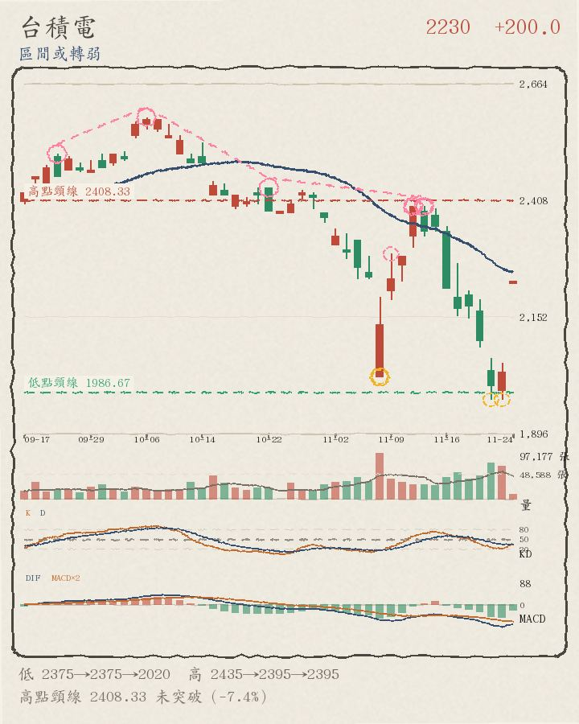
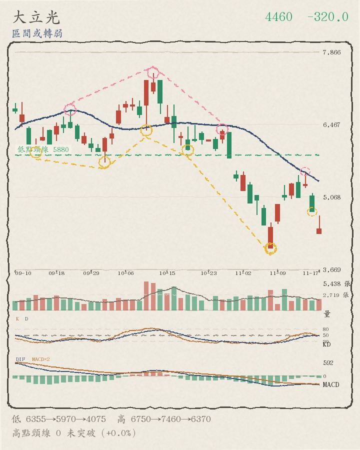
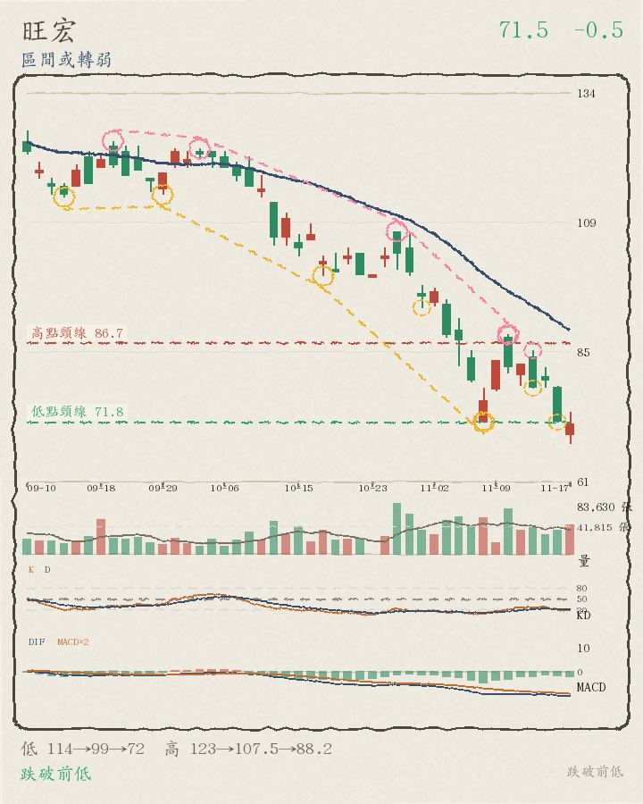
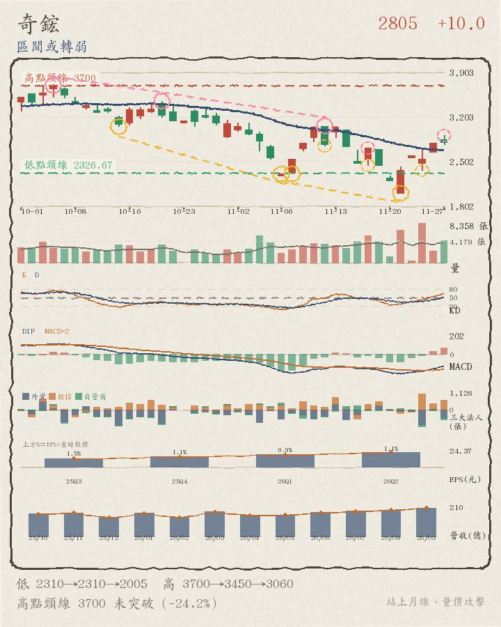
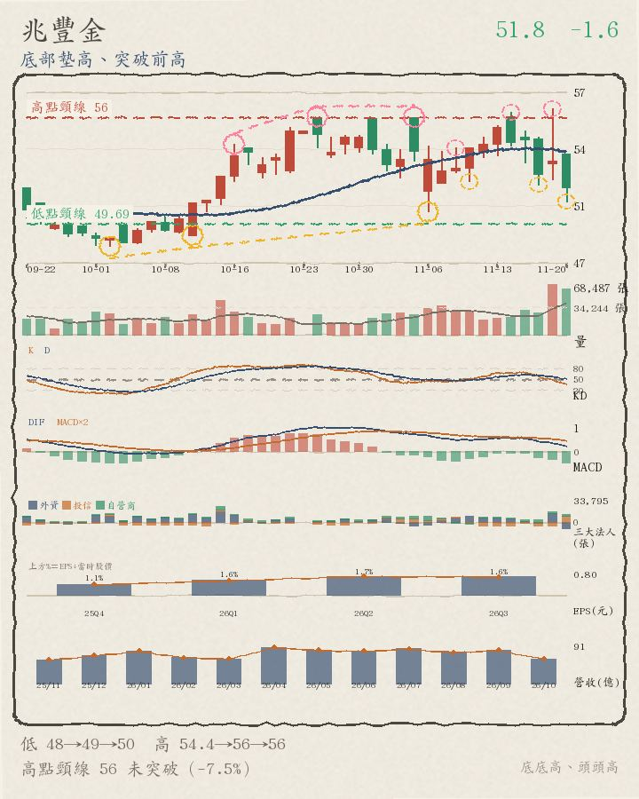
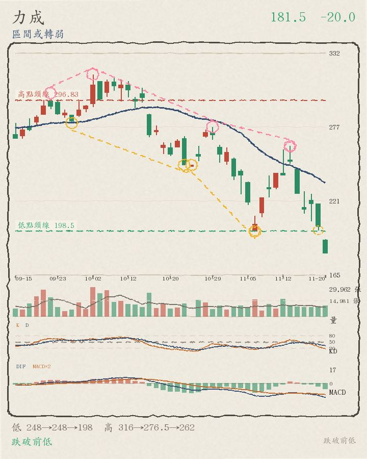
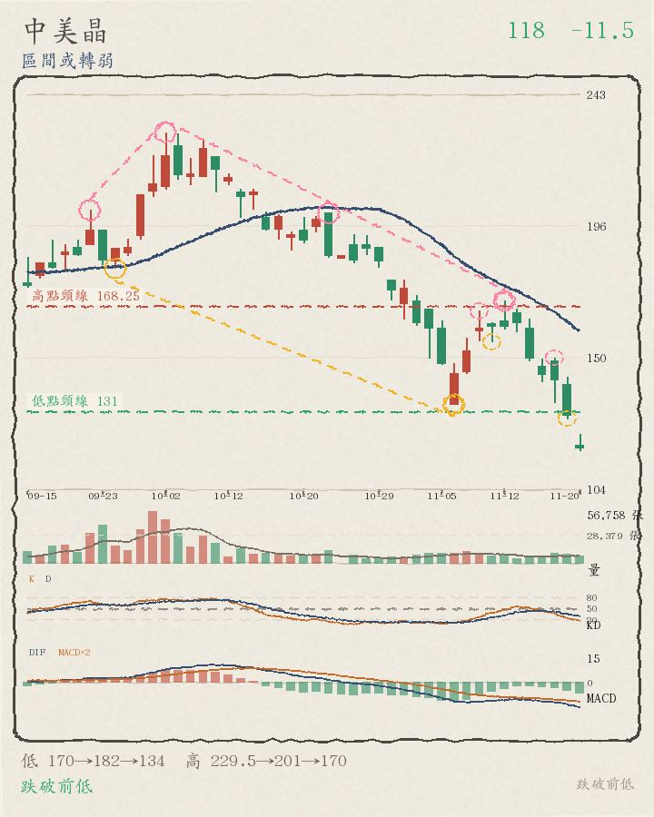
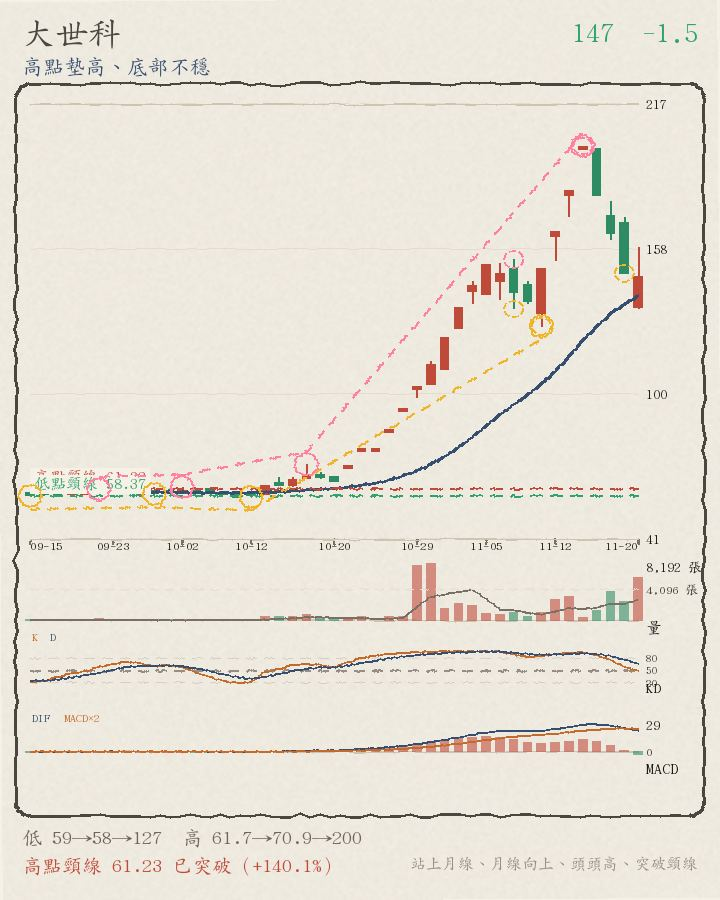

← 回股市觀察
盤中觀察 每日盤中觀察
2026/11/20 12:31 即時快照 · 當日盤中成交金額前 50 檔（上市 35＋上櫃 15）· 公開資料整理
→ 看當日逐檔技術線型分析（全檔） 歷次逐檔分析
36,118.88
加權指數 -2,308.01 點（-6.01%）
這是盤中快照，不是收盤結果。資料時間 2026-11-20 12:31:16（TWSE MIS 即時行情，上市／上櫃皆 delay=0）。
13:30 收盤（含最後一盤集合競價）會再變動；量能是以「已過交易時間比例」推估（尾盤大量時會低估）；
技術面標籤是把盤中現價代入原本以收盤價設計的規則（日線歷史只到前一交易日 9/14）。
統計範圍：候選池＝20261119 與 20261118 收盤成交值前段（上市 250／上櫃 130）取聯集，共 409 檔；再以今日盤中累計成交金額排序取
上市前 35＋上櫃前 15。漲跌家數是候選池內的數字，不是全市場（即時全市場家數證交所沒有開放端點）。
本頁為公開資料的整理與觀察，不構成投資建議，不報牌、不預測、不下買賣決策。
時程紀錄（本日盤中分析）▾ 點擊展開▴ 點擊收合
| 階段 | 時間 |
|---|
| 任務開始 | 由排程自動觸發（週一～週五 12:30） |
| 分析腳本執行 | 12:30:27 → 12:31:16（49.1 秒） |
| 資料快照時間 | 2026-11-20 12:31:16（行情時間戳 12:30:59） |
| 本頁產出 | 見頁尾版本時間 |
逐階段 log：
| 12:30:27 | START 盤中分析開始 |
| 12:30:27 | ① 抓即時指數（tse_t00 / otc_o00） |
| 12:30:27 | ② 建立候選池（20261119 與 20261118 成交值前段，上市＋上櫃） |
| 12:30:28 | 候選池共 409 檔 |
| 12:30:28 | ③ 抓即時候選池行情 |
| 12:31:15 | 取得即時報價 409 檔 |
| 12:31:15 | 候選池漲跌：漲 14／跌 393／平盤 2（快照時間 12:30:59） |
| 12:31:15 | ④ 選出 70 檔（上市 50＋上櫃 20），門檻 8.7 億 |
| 12:31:15 | ⑤ 抓日線歷史並算技術面 |
| 12:31:16 | ⑥ 產出（70 檔） |
K 線圖怎麼看：每一檔都附 K 線圖 —— 黃圈是轉折低點、粉圈是轉折高點（
虛線圈代表還沒確認的轉折）、藍線是月線（20 日均線）；頸線取最近兩個轉折低點之間的最高轉折高點，
突破頸線才會標示。
圖上另有兩條水平虛線、左側標數值：高點頸線（紅，最近兩個轉折低點之間的最高轉折高點）與低點頸線（綠，最近兩個轉折高點之間的最低轉折低點）；樣本不足就不畫。
紅色 K 棒＝收盤高於開盤、綠色＝收盤低於開盤。
大盤趨勢快篩（加權指數）（盤中近似） 資料日 2026/11/19・來源：證交所公開資料
主狀態：跌破頸線（M 頭成立）
前一交易日對照（11/18）：跌破月線（量比 20 1.12） → 今日跌破頸線（M 頭成立）（量比 20 0.97）
指標、數值、判定（點開看 12 項明細：均線位置／排列、月線方向、頸線、轉折結構、位階、量價…）
加權指數11/19 收盤跌 1,768.02 點（-4.40%），收 38,426.89、跌破月線 43,262.29；月線還在下彎，MA5 這條短均還沒收復，離高點頸線 47,615.17 還差 19.30%。
- 均線位置：4 條均線站上 0 條；沒站上的是 MA5 40,685.82（收盤比它低 5.55%）、MA10 41,485.34（收盤比它低 7.37%）、MA20 43,262.29（收盤比它低 11.18%）、MA60 45,864.10（收盤比它低 16.22%）
- 月線方向：月線 MA20 現在 43,262.29，比 5 個交易日前低 1,619.64 點 → 下彎
- 量能：集中市場成交 9,429.9 億，跟 5 日均量差不多（0.97 倍）、跟 20 日均量差不多（0.97 倍）
- 關鍵價位：高點頸線 47,615.17，還差 19.30%；低點頸線 38,610.95已跌破
- 大小型股：加權 -4.40%、櫃買 -7.22%，兩邊同向

圖說：加權指數日 K（與個股圖相同標記）：黃圈＝轉折低點、粉圈＝轉折高點、虛線小圈＝還沒確認的轉折、藍線＝月線 MA20、水平虛線＝高點／低點頸線。最後一根是資料日當天。
本區塊為公開資料的技術面觀察，不構成投資建議，
不報牌、不預測、不下買賣決策。成交金額為集中市場總成交金額（含 ETF／權證），
與頁首摘要的「上市個股成交金額」口徑不同。標籤是統計，不是評分、也不是推薦。
上市 vs 上櫃（同期快篩）
加權 -4.40% vs 櫃買 -7.22%（同向） → 同向
（兩個市場分開寫，不合併成一個數字；櫃買為 TPEX 公開資料）
櫃買歷史：TPEX 逐日回補 130 根；來源：櫃買中心 www/zh-tw/indexInfo/sectinx（逐日，官方；OpenAPI tpex_index 只回當月）
（TPEX OpenAPI 只回當月，故逐日回補；歷史不足就不算該條均線並標「資料不足」，不用錯數字）
近 20 個交易日大盤狀態回溯（最新在上）（點開看逐日主狀態／量比／量價象限）
用同一支程式回算最近 20 個交易日（主狀態 S1~S8 與量比 20 皆為當日收盤當時的判定，
不是事後調整）；量比 20 未公布的日子寫「—」。
好條件最多的（前 10）
不好條件最多的（前 10）
好條件（7 項）：站上月線、月線向上、底底高、頭頭高、突破頸線、攻擊量（量增＋上漲）、守住今日高檔（距今日高點 1% 內）。
不好條件（7 項）：跌破前低、今日下跌、相對大盤弱、在月線之下、貼近今日低點（1% 內）、跌破昨日低點、月線下彎。
兩邊都是同一組日線資料＋盤中即時價算出來的「符合項目數」，只是把方向相反的條件分開數；
條件數不是評分或推薦，不構成投資建議。
逆勢上漲（加權下跌、個股上漲）（5 上市 2／上櫃 3）
盤中爆量（估量比 ≥ 1.5）（23 上市 14／上櫃 9）
跌破前低（線型轉弱）（53 上市 40／上櫃 13）
今日疲弱（跌幅前 10）（10 上市 5／上櫃 5）
逐檔（70 檔，依盤中成交金額排序）
台積電 2330 上市
2000 -100.0（-4.76%）
區間或轉弱 盤中成交值 997.8 億・全榜第 1 名（上市第 1 名）・相對大盤 +1.25
好條件 0/7：無
不好條件 6/7：跌破前低、今日下跌、在月線之下、貼近今日低點（1% 內）、跌破昨日低點、月線下彎

12:31 盤中 2000（-4.76%），比加權指數強 1.25 個百分點、跌破月線 2295.25，離高點頸線 2408.33 還差 17.0%，轉折還沒走出明顯方向。
- 月線位置：現價 2000 在月線 2295.25 之下（-12.9%）；5 日線 2202 也在月線之下（短均在下）；月線向下
- 量能：以已過交易時間推估，今天成交量約是 20 日均量的 1.72 倍（爆量），比 20 日均量大不少；下跌卻量增，量價背離
- 關鍵價位：已跌破前一個轉折低點；高點頸線 2408.33 還在現價上方 17.0%；前一交易日高點 2190（低於 8.7%）；今天盤中高點 2060（低於 2.9%）；今天盤中低點 1990（高於 0.5%）
- 轉折結構：低點 2375、2375、2020 與高點 2435、2395、2395 都沒有明顯遞增，屬於區間震盪或轉弱；還沒確認的轉折低點 11-06 2020、11-19 2085；還沒確認的轉折高點 11-11 2395、11-12 2395（圖上虛線小圈）
聯發科 2454 上市
3395 -325.0（-8.74%）
區間或轉弱 盤中成交值 488.17 億・全榜第 2 名（上市第 2 名）・相對大盤 -2.73
好條件 0/7：無
不好條件 5/7：今日下跌、相對大盤弱、在月線之下、跌破昨日低點、月線下彎

12:31 盤中 3395（-8.74%），比加權指數弱 2.73 個百分點、跌破月線 3859.75，離高點頸線 4185 還差 18.9%，轉折還沒走出明顯方向。
- 月線位置：現價 3395 在月線 3859.75 之下（-12.0%）；5 日線 3883 也在月線之上（短均在上）；月線向下
- 量能：以已過交易時間推估，今天成交量約是 20 日均量的 1.56 倍（爆量），比 20 日均量大不少；下跌卻量增，量價背離
- 關鍵價位：高點頸線 4185 還沒突破，差 18.9%；前一交易日高點 4045（低於 16.1%）；今天盤中高點 3655（低於 7.1%）；今天盤中低點 3350（高於 1.3%）
- 轉折結構：低點 4430、4875、3115 與高點 5165、4245、4235 都沒有明顯遞增，屬於區間震盪或轉弱；還沒確認的轉折低點 11-17 3695、11-19 3660；還沒確認的轉折高點 11-13 4235、11-18 4075（圖上虛線小圈）
國巨* 2327 上市
298.5 -24.0（-7.44%）
區間或轉弱 盤中成交值 166.59 億・全榜第 3 名（上市第 3 名）・相對大盤 -1.43
好條件 0/7：無
不好條件 7/7：跌破前低、今日下跌、相對大盤弱、在月線之下、貼近今日低點（1% 內）、跌破昨日低點、月線下彎

12:31 盤中 298.5（-7.44%），比加權指數弱 1.43 個百分點、跌破月線 439.275，離高點頸線 441.5 還差 32.4%，轉折還沒走出明顯方向。
- 月線位置：現價 298.5 在月線 439.275 之下（-32.0%）；5 日線 364.1 也在月線之下（短均在下）；月線向下
- 量能：以已過交易時間推估，今天成交量約是 20 日均量的 1.74 倍（爆量），比 20 日均量大不少；下跌卻量增，量價背離
- 關鍵價位：已跌破前一個轉折低點；高點頸線 441.5 還在現價上方 32.4%；前一交易日高點 354.5（低於 15.8%）；今天盤中高點 314.5（低於 5.1%）；今天盤中低點 296（高於 0.8%）
- 轉折結構：低點 548、506、364.5 與高點 601、686、442 都沒有明顯遞增，屬於區間震盪或轉弱；還沒確認的轉折低點 11-12 405.5、11-19 317；還沒確認的轉折高點 11-10 442、11-12 441（圖上虛線小圈）
聯電 2303 上市
80.7 -7.5（-8.50%）
區間或轉弱 盤中成交值 158.83 億・全榜第 4 名（上市第 4 名）・相對大盤 -2.49
好條件 0/7：無
不好條件 6/7：跌破前低、今日下跌、相對大盤弱、在月線之下、跌破昨日低點、月線下彎

12:31 盤中 80.7（-8.50%），比加權指數弱 2.49 個百分點、跌破月線 105.495，離高點頸線 166.75 還差 51.6%，轉折還沒走出明顯方向。
- 月線位置：現價 80.7 在月線 105.495 之下（-23.5%）；5 日線 94.06 也在月線之下（短均在下）；月線向下
- 量能：以已過交易時間推估，今天成交量約是 20 日均量的 1.74 倍（爆量），比 20 日均量大不少；下跌卻量增，量價背離
- 關鍵價位：已跌破前一個轉折低點；高點頸線 166.75 還在現價上方 51.6%；前一交易日高點 94.3（低於 14.4%）；今天盤中高點 85.3（低於 5.4%）；今天盤中低點 79.4（高於 1.6%）
- 轉折結構：低點 135、151.5、88.6 與高點 168.5、165、107.5 都沒有明顯遞增，屬於區間震盪或轉弱；還沒確認的轉折低點 11-06 88.6、11-19 87.7；還沒確認的轉折高點 11-12 107.5（圖上虛線小圈）
台達電 2308 上市
900 -100.0（-10.00%）
區間或轉弱 盤中成交值 156.19 億・全榜第 5 名（上市第 5 名）・相對大盤 -3.99
好條件 0/7：無
不好條件 6/7：跌破前低、今日下跌、相對大盤弱、在月線之下、跌破昨日低點、月線下彎

12:31 盤中 900（-10.00%），比加權指數弱 3.99 個百分點、跌破月線 1273.5，離高點頸線 1877.5 還差 52.1%，轉折還沒走出明顯方向。
- 月線位置：現價 900 在月線 1273.5 之下（-29.3%）；5 日線 1095 也在月線之下（短均在下）；月線向下
- 量能：以已過交易時間推估，今天成交量約是 20 日均量的 1.29 倍（量增），比 20 日均量大不少；下跌卻量增，量價背離
- 關鍵價位：已跌破前一個轉折低點；高點頸線 1877.5 還在現價上方 52.1%；前一交易日高點 1115（低於 19.3%）；今天盤中高點 950（低於 5.3%）；今天盤中低點 900（高於 0.0%）
- 轉折結構：低點 1560、1810、1020 與高點 1965、2115、1335 都沒有明顯遞增，屬於區間震盪或轉弱；還沒確認的轉折低點 11-11 1230、11-19 989；還沒確認的轉折高點 11-12 1335、11-19 1115（圖上虛線小圈）
南亞科 2408 上市
265 -28.5（-9.71%）
區間或轉弱 盤中成交值 144.42 億・全榜第 6 名（上市第 6 名）・相對大盤 -3.70
好條件 0/7：無
不好條件 7/7：跌破前低、今日下跌、相對大盤弱、在月線之下、貼近今日低點（1% 內）、跌破昨日低點、月線下彎

12:31 盤中 265（-9.71%），比加權指數弱 3.70 個百分點、跌破月線 391.95，離高點頸線 409.5 還差 35.3%，轉折還沒走出明顯方向。
- 月線位置：現價 265 在月線 391.95 之下（-32.4%）；5 日線 332.9 也在月線之下（短均在下）；月線向下
- 量能：以已過交易時間推估，今天成交量約是 20 日均量的 1.44 倍（量增），比 20 日均量大不少；下跌卻量增，量價背離
- 關鍵價位：已跌破前一個轉折低點；高點頸線 409.5 還在現價上方 35.3%；前一交易日高點 325（低於 18.5%）；今天盤中高點 279.5（低於 5.2%）；今天盤中低點 264.5（高於 0.2%）
- 轉折結構：低點 488、412、324 與高點 537、497.5、417 都沒有明顯遞增，屬於區間震盪或轉弱；還沒確認的轉折低點 11-06 324、11-19 292.5；還沒確認的轉折高點 11-12 417、11-18 345（圖上虛線小圈）
日月光投控 3711 上市
461 -43.0（-8.53%）
區間或轉弱 盤中成交值 116.99 億・全榜第 7 名（上市第 7 名）・相對大盤 -2.52
好條件 0/7：無
不好條件 6/7：跌破前低、今日下跌、相對大盤弱、在月線之下、跌破昨日低點、月線下彎

12:31 盤中 461（-8.53%），比加權指數弱 2.52 個百分點、跌破月線 605.5，離高點頸線 704 還差 34.5%，轉折還沒走出明顯方向。
- 月線位置：現價 461 在月線 605.5 之下（-23.9%）；5 日線 544 也在月線之下（短均在下）；月線向下
- 量能：以已過交易時間推估，今天成交量約是 20 日均量的 1.31 倍（量增），比 20 日均量大不少；下跌卻量增，量價背離
- 關鍵價位：已跌破前一個轉折低點；高點頸線 704 還在現價上方 34.5%；前一交易日高點 550（低於 16.2%）；今天盤中高點 483（低於 4.6%）；今天盤中低點 454（高於 1.5%）
- 轉折結構：低點 715、639、515 與高點 699、709、630 都沒有明顯遞增，屬於區間震盪或轉弱；還沒確認的轉折低點 11-17 506、11-19 498.5；還沒確認的轉折高點 11-12 630、11-18 565（圖上虛線小圈）
鴻海 2317 上市
211.5 -9.0（-4.08%）
區間或轉弱 盤中成交值 108.91 億・全榜第 8 名（上市第 8 名）・相對大盤 +1.93
好條件 0/7：無
不好條件 5/7：跌破前低、今日下跌、在月線之下、跌破昨日低點、月線下彎

12:31 盤中 211.5（-4.08%），比加權指數強 1.93 個百分點、跌破月線 238.05，離高點頸線 246.25 還差 14.1%，轉折還沒走出明顯方向。
- 月線位置：現價 211.5 在月線 238.05 之下（-11.2%）；5 日線 224 也在月線之下（短均在下）；月線向下
- 量能：以已過交易時間推估，今天成交量約是 20 日均量的 1.44 倍（量增），比 20 日均量大不少；下跌卻量增，量價背離
- 關鍵價位：已跌破前一個轉折低點；高點頸線 246.25 還在現價上方 14.1%；前一交易日高點 225.5（低於 6.2%）；今天盤中高點 217（低於 2.5%）；今天盤中低點 209（高於 1.2%）
- 轉折結構：低點 247、237、212.5 與高點 266.5、253.5、247.5 都沒有明顯遞增，屬於區間震盪或轉弱；還沒確認的轉折低點 11-17 215、11-18 215；還沒確認的轉折高點 11-12 245、11-19 225.5（圖上虛線小圈）
南亞 1303 上市
206 -22.5（-9.85%）
區間或轉弱 盤中成交值 92.21 億・全榜第 9 名（上市第 9 名）・相對大盤 -3.84
好條件 0/7：無
不好條件 6/7：跌破前低、今日下跌、相對大盤弱、在月線之下、跌破昨日低點、月線下彎

12:31 盤中 206（-9.85%），比加權指數弱 3.84 個百分點、跌破月線 282.15，離高點頸線 324.5 還差 36.5%，轉折還沒走出明顯方向。
- 月線位置：現價 206 在月線 282.15 之下（-27.0%）；5 日線 264.3 也在月線之下（短均在下）；月線向下
- 量能：以已過交易時間推估，今天成交量約是 20 日均量的 0.55 倍（量縮），比 20 日均量少很多
- 關鍵價位：已跌破前一個轉折低點；高點頸線 324.5 還在現價上方 36.5%；前一交易日高點 251.5（低於 18.1%）；今天盤中高點 216.5（低於 4.8%）；今天盤中低點 206（高於 0.0%）
- 轉折結構：低點 223、295、224.5 與高點 325.5、325、325.5 都沒有明顯遞增，屬於區間震盪或轉弱；還沒確認的轉折低點 11-06 224.5、11-19 228.5；還沒確認的轉折高點 11-12 325.5、11-18 280（圖上虛線小圈）
大立光 3008 上市
3695 -285.0（-7.16%）
區間或轉弱 盤中成交值 90.34 億・全榜第 10 名（上市第 10 名）・相對大盤 -1.15
好條件 0/7：無
不好條件 6/7：跌破前低、今日下跌、相對大盤弱、在月線之下、跌破昨日低點、月線下彎

12:31 盤中 3695（-7.16%），比加權指數弱 1.15 個百分點、跌破月線 5187.25，轉折還沒走出明顯方向。
- 月線位置：現價 3695 在月線 5187.25 之下（-28.8%）；5 日線 4599 也在月線之下（短均在下）；月線向下
- 量能：以已過交易時間推估，今天成交量約是 20 日均量的 1.35 倍（量增），比 20 日均量大不少；下跌卻量增，量價背離
- 關鍵價位：前一交易日高點 4395（低於 15.9%）；今天盤中高點 3780（低於 2.2%）；今天盤中低點 3585（高於 3.1%）
- 轉折結構：低點 6355、5970、4075 與高點 7460、6370、5560 都沒有明顯遞增，屬於區間震盪或轉弱；還沒確認的轉折低點 11-06 4075、11-19 3970；還沒確認的轉折高點 11-13 5560、11-18 4820（圖上虛線小圈）
群聯 8299 上櫃
1335 -120.0（-8.25%）
區間或轉弱 盤中成交值 86.33 億・全榜第 11 名（上櫃第 1 名）・相對大盤 -2.24
好條件 0/7：無
不好條件 6/7：跌破前低、今日下跌、相對大盤弱、在月線之下、跌破昨日低點、月線下彎

12:31 盤中 1335（-8.25%），比加權指數弱 2.24 個百分點、跌破月線 1719，離高點頸線 1762.5 還差 24.3%，轉折還沒走出明顯方向。
- 月線位置：現價 1335 在月線 1719 之下（-22.3%）；5 日線 1533 也在月線之下（短均在下）；月線向下
- 量能：以已過交易時間推估，今天成交量約是 20 日均量的 2.37 倍（爆量），比 20 日均量大不少；下跌卻量增，量價背離
- 關鍵價位：已跌破前一個轉折低點；高點頸線 1762.5 還在現價上方 24.3%；前一交易日高點 1515（低於 11.9%）；今天盤中高點 1435（低於 7.0%）；今天盤中低點 1335（高於 0.0%）
- 轉折結構：低點 1785、1865、1405 與高點 2350、2090、1765 都沒有明顯遞增，屬於區間震盪或轉弱；還沒確認的轉折低點 11-17 1430、11-19 1425；還沒確認的轉折高點 11-12 1765、11-18 1625（圖上虛線小圈）
世芯-KY 3661 上市
3255 -345.0（-9.58%）
區間或轉弱 盤中成交值 84.5 億・全榜第 12 名（上市第 11 名）・相對大盤 -3.57
好條件 1/7：月線向上
不好條件 5/7：今日下跌、相對大盤弱、在月線之下、貼近今日低點（1% 內）、跌破昨日低點

12:31 盤中 3255（-9.58%），比加權指數弱 3.57 個百分點、跌破月線 3478.75，離高點頸線 3907.5 還差 16.7%，轉折還沒走出明顯方向。
- 月線位置：現價 3255 在月線 3478.75 之下（-6.4%）；5 日線 3765 也在月線之上（短均在上）；月線向上
- 量能：以已過交易時間推估，今天成交量約是 20 日均量的 1.28 倍（量增），比 20 日均量大不少；下跌卻量增，量價背離
- 關鍵價位：高點頸線 3907.5 還沒突破，差 16.7%；前一交易日高點 4020（低於 19.0%）；今天盤中高點 3475（低於 6.3%）；今天盤中低點 3240（高於 0.5%）
- 轉折結構：低點 3585、3260、2665 與高點 3835、3825、4085 都沒有明顯遞增，屬於區間震盪或轉弱；還沒確認的轉折低點 11-06 2665、11-18 3440；還沒確認的轉折高點 11-16 4085、11-19 4020（圖上虛線小圈）
台光電 2383 上市
2810 -310.0（-9.94%）
區間或轉弱 盤中成交值 81.35 億・全榜第 13 名（上市第 12 名）・相對大盤 -3.93
好條件 0/7：無
不好條件 6/7：跌破前低、今日下跌、相對大盤弱、在月線之下、跌破昨日低點、月線下彎

12:31 盤中 2810（-9.94%），比加權指數弱 3.93 個百分點、跌破月線 4317.5，離高點頸線 5232.5 還差 46.3%，轉折還沒走出明顯方向。
- 月線位置：現價 2810 在月線 4317.5 之下（-34.9%）；5 日線 3627 也在月線之下（短均在下）；月線向下
- 量能：以已過交易時間推估，今天成交量約是 20 日均量的 0.88 倍（量平），比 20 日均量少一些
- 關鍵價位：已跌破前一個轉折低點；高點頸線 5232.5 還在現價上方 46.3%；前一交易日高點 3485（低於 19.4%）；今天盤中高點 2860（低於 1.7%）；今天盤中低點 2810（高於 0.0%）
- 轉折結構：低點 4855、4930、3690 與高點 5485、5295、4565 都沒有明顯遞增，屬於區間震盪或轉弱；還沒確認的轉折低點 11-12 4065、11-19 3120；還沒確認的轉折高點 11-11 4565（圖上虛線小圈）
華經 2468 上市
69 +6.1（+9.70%）
上升趨勢（底底高＋頭頭高） 盤中成交值 59.55 億・全榜第 14 名（上市第 13 名）・相對大盤 +15.71
好條件 7/7：站上月線、月線向上、底底高、頭頭高、突破頸線、攻擊量（量增＋上漲）、守住今日高檔（距今日高點 1% 內）
不好條件 0/7：無

12:31 盤中 69（+9.70%），比加權指數強 15.71 個百分點、站上月線 62.085，已突破高點頸線 34.6，轉折結構仍是底底高＋頭頭高。
- 月線位置：現價 69 在月線 62.085 之上（+11.1%）；5 日線 71.68 也在月線之上（短均在上）；月線向上
- 量能：以已過交易時間推估，今天成交量約是 20 日均量的 3.60 倍（爆量），比 20 日均量大不少；上漲又量增，量價配合
- 關鍵價位：高點頸線 34.6 已站上；前一交易日高點 71（低於 2.8%）；今天盤中高點 69.1（低於 0.1%）；今天盤中低點 59.5（高於 16.0%）
- 轉折結構：低點 40.5、49.6、53.1 一路墊高、高點 35、34.2、49.45 也一路墊高，是底底高＋頭頭高；還沒確認的轉折低點 11-06 53.1、11-19 62.5；還沒確認的轉折高點 11-11 71.2、11-17 82.1（圖上虛線小圈）
華邦電 2344 上市
89.4 -8.6（-8.78%）
區間或轉弱 盤中成交值 59.13 億・全榜第 15 名（上市第 14 名）・相對大盤 -2.77
好條件 0/7：無
不好條件 6/7：跌破前低、今日下跌、相對大盤弱、在月線之下、跌破昨日低點、月線下彎

12:31 盤中 89.4（-8.78%），比加權指數弱 2.77 個百分點、跌破月線 138.125，離高點頸線 141.5 還差 36.8%，轉折還沒走出明顯方向。
- 月線位置：現價 89.4 在月線 138.125 之下（-35.3%）；5 日線 110.9 也在月線之下（短均在下）；月線向下
- 量能：以已過交易時間推估，今天成交量約是 20 日均量的 1.27 倍（量增），比 20 日均量大不少；下跌卻量增，量價背離
- 關鍵價位：已跌破前一個轉折低點；高點頸線 141.5 還在現價上方 36.8%；前一交易日高點 108（低於 17.2%）；今天盤中高點 93.3（低於 4.2%）；今天盤中低點 88.2（高於 1.4%）
- 轉折結構：低點 151、151、115 與高點 184、178.5、142 都沒有明顯遞增，屬於區間震盪或轉弱；還沒確認的轉折低點 11-11 127、11-19 97.3；還沒確認的轉折高點 11-12 141、11-18 115（圖上虛線小圈）
緯穎 6669 上市
1315 -95.0（-6.74%）
區間或轉弱 盤中成交值 55.72 億・全榜第 16 名（上市第 15 名）・相對大盤 -0.73
好條件 0/7：無
不好條件 6/7：跌破前低、今日下跌、相對大盤弱、在月線之下、跌破昨日低點、月線下彎

12:31 盤中 1315（-6.74%），比加權指數弱 0.73 個百分點、跌破月線 1695.75，離高點頸線 1722.5 還差 23.7%，轉折還沒走出明顯方向。
- 月線位置：現價 1315 在月線 1695.75 之下（-22.4%）；5 日線 1497 也在月線之下（短均在下）；月線向下
- 量能：以已過交易時間推估，今天成交量約是 20 日均量的 1.31 倍（量增），比 20 日均量大不少；下跌卻量增，量價背離
- 關鍵價位：已跌破前一個轉折低點；高點頸線 1722.5 還在現價上方 23.7%；前一交易日高點 1490（低於 11.7%）；今天盤中高點 1360（低於 3.3%）；今天盤中低點 1290（高於 1.9%）
- 轉折結構：低點 2080、1795、1485 與高點 2335、2020、1990 都沒有明顯遞增，屬於區間震盪或轉弱；還沒確認的轉折低點 11-17 1425、11-19 1380；還沒確認的轉折高點 11-12 1715、11-18 1505（圖上虛線小圈）
穩懋 3105 上櫃
381 -42.0（-9.93%）
區間或轉弱 盤中成交值 54.02 億・全榜第 17 名（上櫃第 2 名）・相對大盤 -3.92
好條件 0/7：無
不好條件 6/7：跌破前低、今日下跌、相對大盤弱、在月線之下、跌破昨日低點、月線下彎

12:31 盤中 381（-9.93%），比加權指數弱 3.92 個百分點、跌破月線 503.7，離高點頸線 580.33 還差 34.3%，轉折還沒走出明顯方向。
- 月線位置：現價 381 在月線 503.7 之下（-24.4%）；5 日線 490.8 也在月線之下（短均在下）；月線向下
- 量能：以已過交易時間推估，今天成交量約是 20 日均量的 0.62 倍（量縮），比 20 日均量少很多
- 關鍵價位：已跌破前一個轉折低點；高點頸線 580.33 還在現價上方 34.3%；前一交易日高點 473（低於 19.5%）；今天盤中高點 387.5（低於 1.7%）；今天盤中低點 381（高於 0.0%）
- 轉折結構：低點 454、479、403.5 與高點 630、596、573 都沒有明顯遞增，屬於區間震盪或轉弱；還沒確認的轉折低點 11-09 403.5、11-19 423；還沒確認的轉折高點 11-16 572、11-18 510（圖上虛線小圈）
群創 3481 上市
30 -3.0（-8.95%）
區間或轉弱 盤中成交值 49.27 億・全榜第 18 名（上市第 16 名）・相對大盤 -2.94
好條件 0/7：無
不好條件 6/7：跌破前低、今日下跌、相對大盤弱、在月線之下、跌破昨日低點、月線下彎

12:31 盤中 30（-8.95%），比加權指數弱 2.94 個百分點、跌破月線 40.84，轉折還沒走出明顯方向。
- 月線位置：現價 30 在月線 40.84 之下（-26.5%）；5 日線 36.21 也在月線之下（短均在下）；月線向下
- 量能：以已過交易時間推估，今天成交量約是 20 日均量的 1.44 倍（量增），比 20 日均量大不少；下跌卻量增，量價背離
- 關鍵價位：前一交易日高點 36.35（低於 17.5%）；今天盤中高點 31.55（低於 4.9%）；今天盤中低點 29.7（高於 1.0%）
- 轉折結構：低點 48.55、45.65、34.2 與高點 56.2、49.7、43.3 都沒有明顯遞增，屬於區間震盪或轉弱；還沒確認的轉折低點 11-12 38.85、11-19 32.9；還沒確認的轉折高點 11-12 43.3、11-18 37（圖上虛線小圈）
友達 2409 上市
23.75 -1.4（-5.38%）
區間或轉弱 盤中成交值 48.51 億・全榜第 19 名（上市第 17 名）・相對大盤 +0.63
好條件 0/7：無
不好條件 5/7：跌破前低、今日下跌、在月線之下、跌破昨日低點、月線下彎

12:31 盤中 23.75（-5.38%），比加權指數強 0.63 個百分點、跌破月線 29.955，離高點頸線 28.9 還差 17.8%，轉折還沒走出明顯方向。
- 月線位置：現價 23.75 在月線 29.955 之下（-20.7%）；5 日線 27.68 也在月線之下（短均在下）；月線向下
- 量能：以已過交易時間推估，今天成交量約是 20 日均量的 1.01 倍（量平），跟 20 日均量差不多
- 關鍵價位：已跌破前一個轉折低點；高點頸線 28.9 還在現價上方 17.8%；前一交易日高點 27.65（低於 14.1%）；今天盤中高點 24.6（低於 3.5%）；今天盤中低點 22.7（高於 4.6%）
- 轉折結構：低點 33.75、34.45、24.55 與高點 37.8、36.65、31.5 都沒有明顯遞增，屬於區間震盪或轉弱；還沒確認的轉折低點 11-17 26.1、11-19 25.05；還沒確認的轉折高點 11-12 31.5、11-18 28.55（圖上虛線小圈）
欣興 3037 上市
537 -59.0（-9.90%）
區間或轉弱 盤中成交值 46.84 億・全榜第 20 名（上市第 18 名）・相對大盤 -3.89
好條件 0/7：無
不好條件 6/7：跌破前低、今日下跌、相對大盤弱、在月線之下、跌破昨日低點、月線下彎

12:31 盤中 537（-9.90%），比加權指數弱 3.89 個百分點、跌破月線 865.05，離高點頸線 1190 還差 54.9%，轉折還沒走出明顯方向。
- 月線位置：現價 537 在月線 865.05 之下（-37.9%）；5 日線 677.4 也在月線之下（短均在下）；月線向下
- 量能：以已過交易時間推估，今天成交量約是 20 日均量的 0.40 倍（量縮），比 20 日均量少很多
- 關鍵價位：已跌破前一個轉折低點；高點頸線 1190 還在現價上方 54.9%；前一交易日高點 654（低於 17.9%）；今天盤中高點 545（低於 1.5%）；今天盤中低點 537（高於 0.0%）
- 轉折結構：低點 932、1040、720 與高點 1420、1180、894 都沒有明顯遞增，屬於區間震盪或轉弱；還沒確認的轉折低點 11-06 720、11-19 596；還沒確認的轉折高點 11-12 894、11-18 691（圖上虛線小圈）
藥華藥 6446 上市
1120 -85.0（-7.05%）
區間或轉弱 盤中成交值 46.54 億・全榜第 21 名（上市第 19 名）・相對大盤 -1.04
好條件 1/7：月線向上
不好條件 4/7：今日下跌、相對大盤弱、在月線之下、跌破昨日低點

12:31 盤中 1120（-7.05%），比加權指數弱 1.04 個百分點、跌破月線 1250.75，離高點頸線 1400 還差 20.0%，轉折還沒走出明顯方向。
- 月線位置：現價 1120 在月線 1250.75 之下（-10.4%）；5 日線 1281 也在月線之上（短均在上）；月線向上
- 量能：以已過交易時間推估，今天成交量約是 20 日均量的 1.62 倍（爆量），比 20 日均量大不少；下跌卻量增，量價背離
- 關鍵價位：高點頸線 1400 還沒突破，差 20.0%；前一交易日高點 1270（低於 11.8%）；今天盤中高點 1175（低於 4.7%）；今天盤中低點 1085（高於 3.2%）
- 轉折結構：低點 1155、1145、1075 與高點 1300、1255、1410 都沒有明顯遞增，屬於區間震盪或轉弱；還沒確認的轉折低點 11-11 1235、11-19 1180；還沒確認的轉折高點 11-09 1390、11-12 1410（圖上虛線小圈）
智邦 2345 上市
1220 -130.0（-9.63%）
區間或轉弱 盤中成交值 45.53 億・全榜第 22 名（上市第 20 名）・相對大盤 -3.62
好條件 0/7：無
不好條件 7/7：跌破前低、今日下跌、相對大盤弱、在月線之下、貼近今日低點（1% 內）、跌破昨日低點、月線下彎

12:31 盤中 1220（-9.63%），比加權指數弱 3.62 個百分點、跌破月線 1539.75，轉折還沒走出明顯方向。
- 月線位置：現價 1220 在月線 1539.75 之下（-20.8%）；5 日線 1400 也在月線之下（短均在下）；月線向下
- 量能：以已過交易時間推估，今天成交量約是 20 日均量的 1.05 倍（量平），比 20 日均量大一些
- 關鍵價位：前一交易日高點 1535（低於 20.5%）；今天盤中高點 1290（低於 5.4%）；今天盤中低點 1215（高於 0.4%）
- 轉折結構：低點 1970、1910、1245 與高點 2055、1875、1665 都沒有明顯遞增，屬於區間震盪或轉弱；還沒確認的轉折低點 11-06 1245、11-17 1290；還沒確認的轉折高點 11-12 1665、11-19 1535（圖上虛線小圈）
臻鼎-KY 4958 上市
310 -34.0（-9.88%）
區間或轉弱 盤中成交值 45.15 億・全榜第 23 名（上市第 21 名）・相對大盤 -3.87
好條件 0/7：無
不好條件 6/7：跌破前低、今日下跌、相對大盤弱、在月線之下、跌破昨日低點、月線下彎

12:31 盤中 310（-9.88%），比加權指數弱 3.87 個百分點、跌破月線 449.6，離高點頸線 613.5 還差 49.5%，轉折還沒走出明顯方向。
- 月線位置：現價 310 在月線 449.6 之下（-31.1%）；5 日線 386.5 也在月線之下（短均在下）；月線向下
- 量能：以已過交易時間推估，今天成交量約是 20 日均量的 0.66 倍（量縮），比 20 日均量少很多
- 關鍵價位：已跌破前一個轉折低點；高點頸線 613.5 還在現價上方 49.5%；前一交易日高點 382（低於 18.8%）；今天盤中高點 325.5（低於 4.8%）；今天盤中低點 310（高於 0.0%）
- 轉折結構：低點 463.5、518、355 與高點 613、614、466.5 都沒有明顯遞增，屬於區間震盪或轉弱；還沒確認的轉折低點 11-12 429、11-19 344；還沒確認的轉折高點 11-12 466.5、11-18 397（圖上虛線小圈）
中華電 2412 上市
164 -2.0（-1.20%）
高點墊高、底部不穩 盤中成交值 43.32 億・全榜第 24 名（上市第 22 名）・相對大盤 +4.81
好條件 3/7：站上月線、月線向上、頭頭高
不好條件 2/7：今日下跌、跌破昨日低點

12:31 盤中 164（-1.20%），比加權指數強 4.81 個百分點、站上月線 160.925，離高點頸線 168.5 還差 2.7%，高點還在墊高（但底部沒同步墊高）。
- 月線位置：現價 164 在月線 160.925 之上（+1.9%）；5 日線 164.7 也在月線之上（短均在上）；月線向上
- 量能：以已過交易時間推估，今天成交量約是 20 日均量的 2.34 倍（爆量），比 20 日均量大不少；下跌卻量增，量價背離
- 關鍵價位：高點頸線 168.5 還沒突破，差 2.7%；前一交易日高點 171（低於 4.1%）；今天盤中高點 167.5（低於 2.1%）；今天盤中低點 160（高於 2.5%）
- 轉折結構：高點 146、147、166.5 墊高（頭頭高），但低點 156.5、156.5、156.5 沒有同步墊高；還沒確認的轉折低點 11-11 156.5、11-17 162；還沒確認的轉折高點 11-16 168、11-19 171（圖上虛線小圈）
騰輝電子-KY 6672 上市
351 -13.5（-3.70%）
區間或轉弱 盤中成交值 41.45 億・全榜第 25 名（上市第 23 名）・相對大盤 +2.31
好條件 0/7：無
不好條件 5/7：跌破前低、今日下跌、在月線之下、跌破昨日低點、月線下彎

12:31 盤中 351（-3.70%），比加權指數強 2.31 個百分點、跌破月線 500.975，離高點頸線 547 還差 35.8%，轉折還沒走出明顯方向。
- 月線位置：現價 351 在月線 500.975 之下（-29.9%）；5 日線 430.4 也在月線之下（短均在下）；月線向下
- 量能：以已過交易時間推估，今天成交量約是 20 日均量的 1.55 倍（爆量），比 20 日均量大不少；下跌卻量增，量價背離
- 關鍵價位：已跌破前一個轉折低點；高點頸線 547 還在現價上方 35.8%；前一交易日高點 406.5（低於 13.7%）；今天盤中高點 373（低於 5.9%）；今天盤中低點 328.5（高於 6.8%）
- 轉折結構：低點 285、532、429 與高點 677、552、577 都沒有明顯遞增，屬於區間震盪或轉弱；還沒確認的轉折低點 11-12 488、11-19 364.5；還沒確認的轉折高點 11-10 542、11-12 577（圖上虛線小圈）
力積電 6770 上市
44.4 -4.5（-9.20%）
區間或轉弱 盤中成交值 37.21 億・全榜第 26 名（上市第 24 名）・相對大盤 -3.19
好條件 0/7：無
不好條件 7/7：跌破前低、今日下跌、相對大盤弱、在月線之下、貼近今日低點（1% 內）、跌破昨日低點、月線下彎

12:31 盤中 44.4（-9.20%），比加權指數弱 3.19 個百分點、跌破月線 59.855，離高點頸線 73.85 還差 39.9%，轉折還沒走出明顯方向。
- 月線位置：現價 44.4 在月線 59.855 之下（-25.8%）；5 日線 52.6 也在月線之下（短均在下）；月線向下
- 量能：以已過交易時間推估，今天成交量約是 20 日均量的 1.02 倍（量平），跟 20 日均量差不多
- 關鍵價位：已跌破前一個轉折低點；高點頸線 73.85 還在現價上方 39.9%；前一交易日高點 52（低於 14.6%）；今天盤中高點 47.25（低於 6.0%）；今天盤中低點 44.05（高於 0.8%）
- 轉折結構：低點 70.5、63、49.35 與高點 78.1、73、63 都沒有明顯遞增，屬於區間震盪或轉弱；還沒確認的轉折低點 11-11 55.9、11-19 48.7；還沒確認的轉折高點 11-12 60.4、11-18 54.1（圖上虛線小圈）
緯創 3231 上市
146.5 -9.5（-6.09%）
區間或轉弱 盤中成交值 36.55 億・全榜第 27 名（上市第 25 名）・相對大盤 -0.08
好條件 0/7：無
不好條件 7/7：跌破前低、今日下跌、相對大盤弱、在月線之下、貼近今日低點（1% 內）、跌破昨日低點、月線下彎

12:31 盤中 146.5（-6.09%），比加權指數弱 0.08 個百分點、跌破月線 174.425，離高點頸線 177.75 還差 17.6%，轉折還沒走出明顯方向。
- 月線位置：現價 146.5 在月線 174.425 之下（-16.0%）；5 日線 161 也在月線之下（短均在下）；月線向下
- 量能：以已過交易時間推估，今天成交量約是 20 日均量的 0.95 倍（量平），跟 20 日均量差不多
- 關鍵價位：已跌破前一個轉折低點；高點頸線 177.75 還在現價上方 17.6%；前一交易日高點 164（低於 10.7%）；今天盤中高點 153（低於 4.2%）；今天盤中低點 145.5（高於 0.7%）
- 轉折結構：低點 182.5、173.5、152 與高點 194.5、199.5、181 都沒有明顯遞增，屬於區間震盪或轉弱；還沒確認的轉折低點 11-17 153、11-19 155；還沒確認的轉折高點 11-12 181、11-19 164（圖上虛線小圈）
貿聯-KY 3665 上市
1300 -140.0（-9.72%）
區間或轉弱 盤中成交值 35.24 億・全榜第 28 名（上市第 26 名）・相對大盤 -3.71
好條件 0/7：無
不好條件 5/7：今日下跌、相對大盤弱、在月線之下、跌破昨日低點、月線下彎

12:31 盤中 1300（-9.72%），比加權指數弱 3.71 個百分點、跌破月線 1581.25，離高點頸線 1610 還差 19.3%，轉折還沒走出明顯方向。
- 月線位置：現價 1300 在月線 1581.25 之下（-17.8%）；5 日線 1478 也在月線之下（短均在下）；月線向下
- 量能：以已過交易時間推估，今天成交量約是 20 日均量的 0.98 倍（量平），跟 20 日均量差不多
- 關鍵價位：高點頸線 1610 還沒突破，差 19.3%；前一交易日高點 1590（低於 18.2%）；今天盤中高點 1350（低於 3.7%）；今天盤中低點 1300（高於 0.0%）
- 轉折結構：低點 1930、1810、1295 與高點 2685、2080、1630 都沒有明顯遞增，屬於區間震盪或轉弱；還沒確認的轉折低點 11-17 1365、11-19 1425；還沒確認的轉折高點 11-12 1630、11-19 1590（圖上虛線小圈）
量平
↑ 回上方清單
中信金 2891 上市
67.4 -5.7（-7.80%）
區間或轉弱 盤中成交值 33.55 億・全榜第 29 名（上市第 27 名）・相對大盤 -1.79
好條件 1/7：月線向上
不好條件 6/7：跌破前低、今日下跌、相對大盤弱、在月線之下、貼近今日低點（1% 內）、跌破昨日低點

12:31 盤中 67.4（-7.80%），比加權指數弱 1.79 個百分點、跌破月線 75，離高點頸線 75.96 還差 11.3%，轉折還沒走出明顯方向。
- 月線位置：現價 67.4 在月線 75 之下（-10.1%）；5 日線 75.9 也在月線之上（短均在上）；月線向上
- 量能：以已過交易時間推估，今天成交量約是 20 日均量的 1.35 倍（量增），比 20 日均量大不少；下跌卻量增，量價背離
- 關鍵價位：已跌破前一個轉折低點；高點頸線 75.96 還在現價上方 11.3%；前一交易日高點 76.6（低於 12.0%）；今天盤中高點 72.5（低於 7.0%）；今天盤中低點 67.2（高於 0.3%）
- 轉折結構：低點 67.3、73.8、67.5 與高點 76.4、76.2、80.6 都沒有明顯遞增，屬於區間震盪或轉弱；還沒確認的轉折低點 11-11 72.6、11-19 71.5；還沒確認的轉折高點 11-09 76.2、11-16 80.6（圖上虛線小圈）
台玻 1802 上市
52.9 -5.8（-9.88%）
區間或轉弱 盤中成交值 31.75 億・全榜第 30 名（上市第 28 名）・相對大盤 -3.87
好條件 1/7：月線向上
不好條件 5/7：跌破前低、今日下跌、相對大盤弱、在月線之下、跌破昨日低點

12:31 盤中 52.9（-9.88%），比加權指數弱 3.87 個百分點、跌破月線 67.58，離高點頸線 62.47 還差 15.3%，轉折還沒走出明顯方向。
- 月線位置：現價 52.9 在月線 67.58 之下（-21.7%）；5 日線 70.92 也在月線之上（短均在上）；月線向上
- 量能：以已過交易時間推估，今天成交量約是 20 日均量的 0.40 倍（量縮），比 20 日均量少很多
- 關鍵價位：已跌破前一個轉折低點；高點頸線 62.47 還在現價上方 15.3%；前一交易日高點 65.3（低於 19.0%）；今天盤中高點 55（低於 3.8%）；今天盤中低點 52.9（高於 0.0%）
- 轉折結構：低點 56.6、58.8、54.1 與高點 73.6、70、89.5 都沒有明顯遞增，屬於區間震盪或轉弱；還沒確認的轉折低點 11-06 54.1、11-19 58.7；還沒確認的轉折高點 11-13 89.5（圖上虛線小圈）
廣達 2382 上市
250.5 -12.0（-4.57%）
區間或轉弱 盤中成交值 30.3 億・全榜第 31 名（上市第 29 名）・相對大盤 +1.44
好條件 0/7：無
不好條件 5/7：跌破前低、今日下跌、在月線之下、跌破昨日低點、月線下彎

12:31 盤中 250.5（-4.57%），比加權指數強 1.44 個百分點、跌破月線 298.125，離高點頸線 304 還差 17.6%，轉折還沒走出明顯方向。
- 月線位置：現價 250.5 在月線 298.125 之下（-16.0%）；5 日線 266.2 也在月線之下（短均在下）；月線向下
- 量能：以已過交易時間推估，今天成交量約是 20 日均量的 0.97 倍（量平），跟 20 日均量差不多
- 關鍵價位：已跌破前一個轉折低點；高點頸線 304 還在現價上方 17.6%；前一交易日高點 266.5（低於 6.0%）；今天盤中高點 257（低於 2.5%）；今天盤中低點 247.5（高於 1.2%）
- 轉折結構：低點 311、311、272 與高點 349、337.5、338 都沒有明顯遞增，屬於區間震盪或轉弱；還沒確認的轉折低點 11-06 272、11-18 253；還沒確認的轉折高點 11-10 304、11-19 266.5（圖上虛線小圈）
川湖 2059 上市
5350 -590.0（-9.93%）
區間或轉弱 盤中成交值 29.64 億・全榜第 32 名（上市第 30 名）・相對大盤 -3.92
好條件 0/7：無
不好條件 6/7：跌破前低、今日下跌、相對大盤弱、在月線之下、跌破昨日低點、月線下彎

12:31 盤中 5350（-9.93%），比加權指數弱 3.92 個百分點、跌破月線 8466，離高點頸線 10435 還差 48.7%，轉折還沒走出明顯方向。
- 月線位置：現價 5350 在月線 8466 之下（-36.8%）；5 日線 6806 也在月線之下（短均在下）；月線向下
- 量能：以已過交易時間推估，今天成交量約是 20 日均量的 1.06 倍（量平），比 20 日均量大一些
- 關鍵價位：已跌破前一個轉折低點；高點頸線 10435 還在現價上方 48.7%；前一交易日高點 6570（低於 18.6%）；今天盤中高點 5640（低於 5.1%）；今天盤中低點 5350（高於 0.0%）
- 轉折結構：低點 11700、9500、7200 與高點 10580、10290、9100 都沒有明顯遞增，屬於區間震盪或轉弱；還沒確認的轉折低點 11-06 7200、11-19 5870；還沒確認的轉折高點 11-12 9100（圖上虛線小圈）
旺宏 2337 上市
59.6 -5.0（-7.74%）
區間或轉弱 盤中成交值 29.56 億・全榜第 33 名（上市第 31 名）・相對大盤 -1.73
好條件 0/7：無
不好條件 6/7：跌破前低、今日下跌、相對大盤弱、在月線之下、跌破昨日低點、月線下彎

12:31 盤中 59.6（-7.74%），比加權指數弱 1.73 個百分點、跌破月線 85.63，離高點頸線 86.7 還差 31.3%，轉折還沒走出明顯方向。
- 月線位置：現價 59.6 在月線 85.63 之下（-30.4%）；5 日線 71.6 也在月線之下（短均在下）；月線向下
- 量能：以已過交易時間推估，今天成交量約是 20 日均量的 1.37 倍（量增），比 20 日均量大不少；下跌卻量增，量價背離
- 關鍵價位：已跌破前一個轉折低點；高點頸線 86.7 還在現價上方 31.3%；前一交易日高點 69.9（低於 14.7%）；今天盤中高點 62.5（低於 4.6%）；今天盤中低點 58.6（高於 1.7%）
- 轉折結構：低點 114.5、99.2、71.8 與高點 123、107.5、88.2 都沒有明顯遞增，屬於區間震盪或轉弱；還沒確認的轉折低點 11-12 78.2、11-19 64.3；還沒確認的轉折高點 11-12 85.2、11-18 74.8（圖上虛線小圈）
環球晶 6488 上櫃
441.5 -48.5（-9.90%）
區間或轉弱 盤中成交值 28.65 億・全榜第 34 名（上櫃第 3 名）・相對大盤 -3.89
好條件 0/7：無
不好條件 7/7：跌破前低、今日下跌、相對大盤弱、在月線之下、貼近今日低點（1% 內）、跌破昨日低點、月線下彎

12:31 盤中 441.5（-9.90%），比加權指數弱 3.89 個百分點、跌破月線 662.2，離高點頸線 1013.33 還差 56.4%，轉折還沒走出明顯方向。
- 月線位置：現價 441.5 在月線 662.2 之下（-33.3%）；5 日線 557.4 也在月線之下（短均在下）；月線向下
- 量能：以已過交易時間推估，今天成交量約是 20 日均量的 0.72 倍（量平），比 20 日均量少很多
- 關鍵價位：已跌破前一個轉折低點；高點頸線 1013.33 還在現價上方 56.4%；前一交易日高點 551（低於 19.9%）；今天盤中高點 461.5（低於 4.3%）；今天盤中低點 441（高於 0.1%）
- 轉折結構：低點 875、872、508 與高點 1010、1260、663 都沒有明顯遞增，屬於區間震盪或轉弱；還沒確認的轉折低點 11-06 508、11-19 490；還沒確認的轉折高點 11-12 663、11-18 577（圖上虛線小圈）
富邦金 2881 上市
136.5 -11.5（-7.77%）
區間或轉弱 盤中成交值 28.41 億・全榜第 35 名（上市第 32 名）・相對大盤 -1.76
好條件 0/7：無
不好條件 7/7：跌破前低、今日下跌、相對大盤弱、在月線之下、貼近今日低點（1% 內）、跌破昨日低點、月線下彎

12:31 盤中 136.5（-7.77%），比加權指數弱 1.76 個百分點、跌破月線 156.05，離高點頸線 159.83 還差 14.6%，轉折還沒走出明顯方向。
- 月線位置：現價 136.5 在月線 156.05 之下（-12.5%）；5 日線 152.2 也在月線之下（短均在下）；月線向下
- 量能：以已過交易時間推估，今天成交量約是 20 日均量的 1.23 倍（量增），比 20 日均量大不少；下跌卻量增，量價背離
- 關鍵價位：已跌破前一個轉折低點；高點頸線 159.83 還在現價上方 14.6%；前一交易日高點 149（低於 8.4%）；今天盤中高點 145.5（低於 6.2%）；今天盤中低點 136（高於 0.4%）
- 轉折結構：低點 147.5、153.5、140 與高點 164、164、163.5 都沒有明顯遞增，屬於區間震盪或轉弱；還沒確認的轉折低點 11-17 145、11-19 142.5；還沒確認的轉折高點 11-05 159.5、11-13 163.5（圖上虛線小圈）
奇鋐 3017 上市
2205 -240.0（-9.82%）
區間或轉弱 盤中成交值 27.78 億・全榜第 36 名（上市第 33 名）・相對大盤 -3.81
好條件 0/7：無
不好條件 6/7：跌破前低、今日下跌、相對大盤弱、在月線之下、跌破昨日低點、月線下彎

12:31 盤中 2205（-9.82%），比加權指數弱 3.81 個百分點、跌破月線 2854，離高點頸線 3631.67 還差 39.3%，轉折還沒走出明顯方向。
- 月線位置：現價 2205 在月線 2854 之下（-22.7%）；5 日線 2682 也在月線之下（短均在下）；月線向下
- 量能：以已過交易時間推估，今天成交量約是 20 日均量的 0.49 倍（量縮），比 20 日均量少很多
- 關鍵價位：已跌破前一個轉折低點；高點頸線 3631.67 還在現價上方 39.3%；前一交易日高點 2695（低於 18.2%）；今天盤中高點 2280（低於 3.3%）；今天盤中低點 2205（高於 0.0%）
- 轉折結構：低點 3050、2310、2310 與高點 3700、3450、3060 都沒有明顯遞增，屬於區間震盪或轉弱；還沒確認的轉折低點 11-12 2750、11-18 2440；還沒確認的轉折高點 11-12 3060、11-18 2715（圖上虛線小圈）
國泰金 2882 上市
97 -6.5（-6.28%）
區間或轉弱 盤中成交值 26.55 億・全榜第 37 名（上市第 34 名）・相對大盤 -0.27
好條件 0/7：無
不好條件 7/7：跌破前低、今日下跌、相對大盤弱、在月線之下、貼近今日低點（1% 內）、跌破昨日低點、月線下彎

12:31 盤中 97（-6.28%），比加權指數弱 0.27 個百分點、跌破月線 112.1，離高點頸線 116.17 還差 16.5%，轉折還沒走出明顯方向。
- 月線位置：現價 97 在月線 112.1 之下（-13.5%）；5 日線 109.8 也在月線之下（短均在下）；月線向下
- 量能：以已過交易時間推估，今天成交量約是 20 日均量的 1.26 倍（量增），比 20 日均量大不少；下跌卻量增，量價背離
- 關鍵價位：已跌破前一個轉折低點；高點頸線 116.17 還在現價上方 16.5%；前一交易日高點 110（低於 11.8%）；今天盤中高點 103（低於 5.8%）；今天盤中低點 96.9（高於 0.1%）
- 轉折結構：低點 110、110、101 與高點 117.5、117.5、115.5 都沒有明顯遞增，屬於區間震盪或轉弱；還沒確認的轉折低點 11-17 106、11-19 102.5；還沒確認的轉折高點 11-09 113.5、11-16 115.5（圖上虛線小圈）
技嘉 2376 上市
248.5 -11.5（-4.42%）
區間或轉弱 盤中成交值 26.22 億・全榜第 38 名（上市第 35 名）・相對大盤 +1.59
好條件 0/7：無
不好條件 5/7：跌破前低、今日下跌、在月線之下、跌破昨日低點、月線下彎

12:31 盤中 248.5（-4.42%），比加權指數強 1.59 個百分點、跌破月線 314，離高點頸線 368.67 還差 32.6%，轉折還沒走出明顯方向。
- 月線位置：現價 248.5 在月線 314 之下（-20.9%）；5 日線 274.5 也在月線之下（短均在下）；月線向下
- 量能：以已過交易時間推估，今天成交量約是 20 日均量的 1.91 倍（爆量），比 20 日均量大不少；下跌卻量增，量價背離
- 關鍵價位：已跌破前一個轉折低點；高點頸線 368.67 還在現價上方 32.6%；前一交易日高點 278（低於 10.6%）；今天盤中高點 254（低於 2.2%）；今天盤中低點 242.5（高於 2.5%）
- 轉折結構：低點 358.5、344.5、282 與高點 396.5、363、367 都沒有明顯遞增，屬於區間震盪或轉弱；還沒確認的轉折低點 11-17 268.5、11-19 260；還沒確認的轉折高點 11-09 319、11-18 284.5（圖上虛線小圈）
光寶科 2301 上市
176 -17.5（-9.04%）
區間或轉弱 盤中成交值 25.23 億・全榜第 39 名（上市第 36 名）・相對大盤 -3.03
好條件 0/7：無
不好條件 7/7：跌破前低、今日下跌、相對大盤弱、在月線之下、貼近今日低點（1% 內）、跌破昨日低點、月線下彎

12:31 盤中 176（-9.04%），比加權指數弱 3.03 個百分點、跌破月線 229.775，離高點頸線 241.25 還差 27.0%，轉折還沒走出明顯方向。
- 月線位置：現價 176 在月線 229.775 之下（-23.4%）；5 日線 210.6 也在月線之下（短均在下）；月線向下
- 量能：以已過交易時間推估，今天成交量約是 20 日均量的 1.13 倍（量增），比 20 日均量大一些；下跌卻量增，量價背離
- 關鍵價位：已跌破前一個轉折低點；高點頸線 241.25 還在現價上方 27.0%；前一交易日高點 214（低於 17.8%）；今天盤中高點 188（低於 6.4%）；今天盤中低點 174.5（高於 0.9%）
- 轉折結構：低點 278、254、190.5 與高點 299.5、304.5、243.5 都沒有明顯遞增，屬於區間震盪或轉弱；還沒確認的轉折低點 11-12 227.5、11-19 192；還沒確認的轉折高點 11-12 243.5、11-18 215（圖上虛線小圈）
華碩 2357 上市
754 -46.0（-5.75%）
區間或轉弱 盤中成交值 24.29 億・全榜第 40 名（上市第 37 名）・相對大盤 +0.26
好條件 0/7：無
不好條件 5/7：跌破前低、今日下跌、在月線之下、跌破昨日低點、月線下彎

12:31 盤中 754（-5.75%），比加權指數強 0.26 個百分點、跌破月線 891.4，離高點頸線 915 還差 17.6%，轉折還沒走出明顯方向。
- 月線位置：現價 754 在月線 891.4 之下（-15.4%）；5 日線 837 也在月線之下（短均在下）；月線向下
- 量能：以已過交易時間推估，今天成交量約是 20 日均量的 1.35 倍（量增），比 20 日均量大不少；下跌卻量增，量價背離
- 關鍵價位：已跌破前一個轉折低點；高點頸線 915 還在現價上方 17.6%；前一交易日高點 840（低於 10.2%）；今天盤中高點 789（低於 4.4%）；今天盤中低點 746（高於 1.1%）
- 轉折結構：低點 946、946、790 與高點 1005、915、915 都沒有明顯遞增，屬於區間震盪或轉弱；還沒確認的轉折低點 11-17 810、11-19 800；還沒確認的轉折高點 11-10 915、11-13 915（圖上虛線小圈）
中華資安 7765 上市
294.5 +26.5（+9.89%）
高點墊高、底部不穩 盤中成交值 24.1 億・全榜第 41 名（上市第 38 名）・相對大盤 +15.90
好條件 5/7：站上月線、月線向上、頭頭高、突破頸線、攻擊量（量增＋上漲）
不好條件 0/7：無

12:31 盤中 294.5（+9.89%），比加權指數強 15.90 個百分點、站上月線 248.575，已突破高點頸線 294.25，高點還在墊高（但底部沒同步墊高）。
- 月線位置：現價 294.5 在月線 248.575 之上（+18.5%）；5 日線 276.7 也在月線之上（短均在上）；月線向上
- 量能：以已過交易時間推估，今天成交量約是 20 日均量的 18.37 倍（爆量），比 20 日均量大不少；上漲又量增，量價配合
- 關鍵價位：高點頸線 294.25 已站上；前一交易日高點 289（高於 1.9%）；今天盤中高點 294.5（高於 0.0%）；今天盤中低點 249（高於 18.3%）
- 轉折結構：高點 247、252、296 墊高（頭頭高），但低點 226.5、229、220.5 沒有同步墊高；還沒確認的轉折低點 11-06 220.5、11-18 260；還沒確認的轉折高點 11-16 296、11-18 292.5（圖上虛線小圈）
驊宏資 6148 上櫃
52.5 +3.2（+6.60%）
高點墊高、底部不穩 盤中成交值 23.63 億・全榜第 42 名（上櫃第 4 名）・相對大盤 +12.61
好條件 5/7：站上月線、月線向上、頭頭高、突破頸線、攻擊量（量增＋上漲）
不好條件 0/7：無

12:31 盤中 52.5（+6.60%），比加權指數強 12.61 個百分點、站上月線 47.058，已突破高點頸線 46.65，高點還在墊高（但底部沒同步墊高）。
- 月線位置：現價 52.5 在月線 47.058 之上（+11.6%）；5 日線 56.15 也在月線之上（短均在上）；月線向上
- 量能：以已過交易時間推估，今天成交量約是 20 日均量的 3.04 倍（爆量），比 20 日均量大不少；上漲又量增，量價配合
- 關鍵價位：高點頸線 46.65 已站上；前一交易日高點 54.9（低於 4.4%）；今天盤中高點 54（低於 2.8%）；今天盤中低點 45.6（高於 15.1%）
- 轉折結構：高點 42.1、44.3、46.45 墊高（頭頭高），但低點 36.3、36.35、37.85 沒有同步墊高；還沒確認的轉折低點 11-06 39.1、11-19 48.95；還沒確認的轉折高點 11-05 46.85、11-17 66.4（圖上虛線小圈）
健鼎 3044 上市
403 -30.5（-7.04%）
區間或轉弱 盤中成交值 23.56 億・全榜第 43 名（上市第 39 名）・相對大盤 -1.03
好條件 0/7：無
不好條件 6/7：今日下跌、相對大盤弱、在月線之下、貼近今日低點（1% 內）、跌破昨日低點、月線下彎

12:31 盤中 403（-7.04%），比加權指數弱 1.03 個百分點、跌破月線 495.725，離高點頸線 594.33 還差 32.2%，轉折還沒走出明顯方向。
- 月線位置：現價 403 在月線 495.725 之下（-18.7%）；5 日線 473.2 也在月線之下（短均在下）；月線向下
- 量能：以已過交易時間推估，今天成交量約是 20 日均量的 1.71 倍（爆量），比 20 日均量大不少；下跌卻量增，量價背離
- 關鍵價位：高點頸線 594.33 還沒突破，差 32.2%；前一交易日高點 478（低於 15.7%）；今天盤中高點 426（低於 5.4%）；今天盤中低點 401.5（高於 0.4%）
- 轉折結構：低點 554、554、395 與高點 597、563、582 都沒有明顯遞增，屬於區間震盪或轉弱；還沒確認的轉折低點 11-06 395、11-18 430；還沒確認的轉折高點 11-13 582、11-18 481.5（圖上虛線小圈）
鴻勁 7769 上市
2890 -320.0（-9.97%）
區間或轉弱 盤中成交值 23.29 億・全榜第 44 名（上市第 40 名）・相對大盤 -3.96
好條件 0/7：無
不好條件 6/7：跌破前低、今日下跌、相對大盤弱、在月線之下、跌破昨日低點、月線下彎

12:31 盤中 2890（-9.97%），比加權指數弱 3.96 個百分點、跌破月線 4381.5，離高點頸線 6565 還差 56.0%，轉折還沒走出明顯方向。
- 月線位置：現價 2890 在月線 4381.5 之下（-34.0%）；5 日線 3611 也在月線之下（短均在下）；月線向下
- 量能：以已過交易時間推估，今天成交量約是 20 日均量的 1.16 倍（量增），比 20 日均量大不少；下跌卻量增，量價背離
- 關鍵價位：已跌破前一個轉折低點；高點頸線 6565 還在現價上方 56.0%；前一交易日高點 3595（低於 19.6%）；今天盤中高點 3040（低於 4.9%）；今天盤中低點 2890（高於 0.0%）
- 轉折結構：低點 5380、5035、3585 與高點 6515、5610、4405 都沒有明顯遞增，屬於區間震盪或轉弱；還沒確認的轉折低點 11-06 3585、11-19 3210；還沒確認的轉折高點 11-12 4405、11-18 3670（圖上虛線小圈）
長榮 2603 上市
233 -14.0（-5.67%）
區間或轉弱 盤中成交值 22.95 億・全榜第 45 名（上市第 41 名）・相對大盤 +0.34
好條件 0/7：無
不好條件 5/7：跌破前低、今日下跌、在月線之下、跌破昨日低點、月線下彎

12:31 盤中 233（-5.67%），比加權指數強 0.34 個百分點、跌破月線 258.85，離高點頸線 268.6 還差 13.3%，轉折還沒走出明顯方向。
- 月線位置：現價 233 在月線 258.85 之下（-10.0%）；5 日線 255.1 也在月線之下（短均在下）；月線向下
- 量能：以已過交易時間推估，今天成交量約是 20 日均量的 1.20 倍（量增），比 20 日均量大不少；下跌卻量增，量價背離
- 關鍵價位：已跌破前一個轉折低點；高點頸線 268.6 還在現價上方 13.3%；前一交易日高點 259.5（低於 10.2%）；今天盤中高點 244（低於 4.5%）；今天盤中低點 233（高於 0.0%）
- 轉折結構：低點 231、254、236.5 與高點 270.5、274.5、264.5 都沒有明顯遞增，屬於區間震盪或轉弱；還沒確認的轉折低點 11-17 253、11-19 243；還沒確認的轉折高點 11-11 264.5、11-16 264（圖上虛線小圈）
啟碁 6285 上市
172.5 -18.5（-9.69%）
區間或轉弱 盤中成交值 22.86 億・全榜第 46 名（上市第 42 名）・相對大盤 -3.68
好條件 0/7：無
不好條件 6/7：今日下跌、相對大盤弱、在月線之下、貼近今日低點（1% 內）、跌破昨日低點、月線下彎

12:31 盤中 172.5（-9.69%），比加權指數弱 3.68 個百分點、跌破月線 201.975，離高點頸線 201 還差 14.2%，轉折還沒走出明顯方向。
- 月線位置：現價 172.5 在月線 201.975 之下（-14.6%）；5 日線 189.9 也在月線之下（短均在下）；月線向下
- 量能：以已過交易時間推估，今天成交量約是 20 日均量的 1.85 倍（爆量），比 20 日均量大不少；下跌卻量增，量價背離
- 關鍵價位：高點頸線 201 還沒突破，差 14.2%；前一交易日高點 203.5（低於 15.2%）；今天盤中高點 184.5（低於 6.5%）；今天盤中低點 172（高於 0.3%）
- 轉折結構：低點 216、240.5、164.5 與高點 270、266、207.5 都沒有明顯遞增，屬於區間震盪或轉弱；還沒確認的轉折低點 11-12 187、11-17 171；還沒確認的轉折高點 11-12 207.5、11-19 203.5（圖上虛線小圈）
台新新光金 2887 上市
34.35 -1.4（-3.78%）
區間或轉弱 盤中成交值 22.38 億・全榜第 47 名（上市第 43 名）・相對大盤 +2.23
好條件 0/7：無
不好條件 5/7：跌破前低、今日下跌、在月線之下、跌破昨日低點、月線下彎

12:31 盤中 34.35（-3.78%），比加權指數強 2.23 個百分點、跌破月線 40.29，離高點頸線 40.46 還差 15.1%，轉折還沒走出明顯方向。
- 月線位置：現價 34.35 在月線 40.29 之下（-14.7%）；5 日線 38.28 也在月線之下（短均在下）；月線向下
- 量能：以已過交易時間推估，今天成交量約是 20 日均量的 1.32 倍（量增），比 20 日均量大不少；下跌卻量增，量價背離
- 關鍵價位：已跌破前一個轉折低點；高點頸線 40.46 還在現價上方 15.1%；前一交易日高點 37.15（低於 7.5%）；今天盤中高點 35.15（低於 2.3%）；今天盤中低點 33.65（高於 2.1%）
- 轉折結構：低點 40.1、40.9、36.3 與高點 43.5、42.9、41.35 都沒有明顯遞增，屬於區間震盪或轉弱；還沒確認的轉折低點 11-06 36.3、11-19 34.75；還沒確認的轉折高點 11-16 41.35、11-18 39.55（圖上虛線小圈）
創意 3443 上市
5400 -600.0（-10.00%）
區間或轉弱 盤中成交值 21.6 億・全榜第 48 名（上市第 44 名）・相對大盤 -3.99
好條件 0/7：無
不好條件 6/7：跌破前低、今日下跌、相對大盤弱、在月線之下、跌破昨日低點、月線下彎

12:31 盤中 5400（-10.00%），比加權指數弱 3.99 個百分點、跌破月線 7273.5，離高點頸線 8537 還差 36.7%，轉折還沒走出明顯方向。
- 月線位置：現價 5400 在月線 7273.5 之下（-25.8%）；5 日線 7200 也在月線之下（短均在下）；月線向下
- 量能：以已過交易時間推估，今天成交量約是 20 日均量的 0.18 倍（量縮），比 20 日均量少很多
- 關鍵價位：已跌破前一個轉折低點；高點頸線 8537 還在現價上方 36.7%；前一交易日高點 6510（低於 17.1%）；今天盤中高點 5400（高於 0.0%）；今天盤中低點 5400（高於 0.0%）
- 轉折結構：低點 7065、7200、5765 與高點 8490、8255、8645 都沒有明顯遞增，屬於區間震盪或轉弱；還沒確認的轉折低點 11-06 5765、11-19 6000；還沒確認的轉折高點 11-13 8645（圖上虛線小圈）
威剛 3260 上櫃
236.5 -17.5（-6.89%）
區間或轉弱 盤中成交值 21.02 億・全榜第 49 名（上櫃第 5 名）・相對大盤 -0.88
好條件 0/7：無
不好條件 6/7：跌破前低、今日下跌、相對大盤弱、在月線之下、跌破昨日低點、月線下彎

12:31 盤中 236.5（-6.89%），比加權指數弱 0.88 個百分點、跌破月線 311.25，離高點頸線 319.75 還差 26.0%，轉折還沒走出明顯方向。
- 月線位置：現價 236.5 在月線 311.25 之下（-24.0%）；5 日線 276.8 也在月線之下（短均在下）；月線向下
- 量能：以已過交易時間推估，今天成交量約是 20 日均量的 1.62 倍（爆量），比 20 日均量大不少；下跌卻量增，量價背離
- 關鍵價位：已跌破前一個轉折低點；高點頸線 319.75 還在現價上方 26.0%；前一交易日高點 275（低於 14.0%）；今天盤中高點 250（低於 5.4%）；今天盤中低點 232.5（高於 1.7%）
- 轉折結構：低點 328、328、270 與高點 385.5、378.5、323 都沒有明顯遞增，屬於區間震盪或轉弱；還沒確認的轉折低點 11-17 263、11-19 252；還沒確認的轉折高點 11-12 316.5、11-18 288（圖上虛線小圈）
兆豐金 2886 上市
52.2 -1.2（-2.25%）
上升趨勢（底底高＋頭頭高） 盤中成交值 20.75 億・全榜第 50 名（上市第 45 名）・相對大盤 +3.76
好條件 3/7：月線向上、底底高、頭頭高
不好條件 3/7：今日下跌、在月線之下、跌破昨日低點

12:31 盤中 52.2（-2.25%），比加權指數強 3.76 個百分點、跌破月線 54.11，離高點頸線 55.57 還差 6.1%，轉折結構仍是底底高＋頭頭高。
- 月線位置：現價 52.2 在月線 54.11 之下（-3.5%）；5 日線 54.12 也在月線之上（短均在上）；月線向上
- 量能：以已過交易時間推估，今天成交量約是 20 日均量的 2.00 倍（爆量），比 20 日均量大不少；下跌卻量增，量價背離
- 關鍵價位：高點頸線 55.57 還沒突破，差 6.1%；前一交易日高點 56.5（低於 7.6%）；今天盤中高點 53.8（低於 3.0%）；今天盤中低點 51（高於 2.4%）
- 轉折結構：低點 48.35、49、50.4 一路墊高、高點 54.4、56、56 也一路墊高，是底底高＋頭頭高；還沒確認的轉折低點 11-11 52.2、11-18 52；還沒確認的轉折高點 11-16 56.3、11-19 56.5（圖上虛線小圈）
京元電子 2449 上市
157.5 -17.5（-10.00%）
區間或轉弱 盤中成交值 20.45 億・全榜第 51 名（上市第 46 名）・相對大盤 -3.99
好條件 0/7：無
不好條件 6/7：跌破前低、今日下跌、相對大盤弱、在月線之下、跌破昨日低點、月線下彎

12:31 盤中 157.5（-10.00%），比加權指數弱 3.99 個百分點、跌破月線 231.375，離高點頸線 284 還差 44.5%，轉折還沒走出明顯方向。
- 月線位置：現價 157.5 在月線 231.375 之下（-31.9%）；5 日線 190.3 也在月線之下（短均在下）；月線向下
- 量能：以已過交易時間推估，今天成交量約是 20 日均量的 0.70 倍（量縮），比 20 日均量少很多
- 關鍵價位：已跌破前一個轉折低點；高點頸線 284 還在現價上方 44.5%；前一交易日高點 190（低於 17.1%）；今天盤中高點 164（低於 4.0%）；今天盤中低點 157.5（高於 0.0%）
- 轉折結構：低點 284、255、201 與高點 310、284.5、235 都沒有明顯遞增，屬於區間震盪或轉弱；還沒確認的轉折低點 11-17 173.5、11-19 175；還沒確認的轉折高點 11-12 235、11-18 194（圖上虛線小圈）
信驊 5274 上櫃
7860 -870.0（-9.97%）
區間或轉弱 盤中成交值 20.44 億・全榜第 52 名（上櫃第 6 名）・相對大盤 -3.96
好條件 0/7：無
不好條件 6/7：跌破前低、今日下跌、相對大盤弱、在月線之下、跌破昨日低點、月線下彎

12:31 盤中 7860（-9.97%），比加權指數弱 3.96 個百分點、跌破月線 13296.5，轉折還沒走出明顯方向。
- 月線位置：現價 7860 在月線 13296.5 之下（-40.9%）；5 日線 10221 也在月線之下（短均在下）；月線向下
- 量能：以已過交易時間推估，今天成交量約是 20 日均量的 0.72 倍（量平），比 20 日均量少很多
- 關鍵價位：前一交易日高點 9490（低於 17.2%）；今天盤中高點 7860（高於 0.0%）；今天盤中低點 7860（高於 0.0%）
- 轉折結構：低點 15975、15500、10710 與高點 18465、17490、13375 都沒有明顯遞增，屬於區間震盪或轉弱；還沒確認的轉折低點 11-10 10710、11-19 8730；還沒確認的轉折高點 11-09 11990、11-12 13375（圖上虛線小圈）
華新科 2492 上市
187.5 -20.5（-9.86%）
區間或轉弱 盤中成交值 19.21 億・全榜第 53 名（上市第 47 名）・相對大盤 -3.85
好條件 0/7：無
不好條件 6/7：跌破前低、今日下跌、相對大盤弱、在月線之下、跌破昨日低點、月線下彎

12:31 盤中 187.5（-9.86%），比加權指數弱 3.85 個百分點、跌破月線 309.3，離高點頸線 428.33 還差 56.2%，轉折還沒走出明顯方向。
- 月線位置：現價 187.5 在月線 309.3 之下（-39.4%）；5 日線 242.9 也在月線之下（短均在下）；月線向下
- 量能：以已過交易時間推估，今天成交量約是 20 日均量的 0.44 倍（量縮），比 20 日均量少很多
- 關鍵價位：已跌破前一個轉折低點；高點頸線 428.33 還在現價上方 56.2%；前一交易日高點 234（低於 19.9%）；今天盤中高點 196（低於 4.3%）；今天盤中低點 187.5（高於 0.0%）
- 轉折結構：低點 376.5、355.5、253.5 與高點 422、431.5、307 都沒有明顯遞增，屬於區間震盪或轉弱；還沒確認的轉折低點 11-12 272、11-19 208；還沒確認的轉折高點 11-11 307（圖上虛線小圈）
力成 6239 上市
181.5 -20.0（-9.93%）
區間或轉弱 盤中成交值 19.17 億・全榜第 54 名（上市第 48 名）・相對大盤 -3.92
好條件 0/7：無
不好條件 6/7：跌破前低、今日下跌、相對大盤弱、在月線之下、跌破昨日低點、月線下彎

12:31 盤中 181.5（-9.93%），比加權指數弱 3.92 個百分點、跌破月線 237.975，離高點頸線 296.83 還差 38.9%，轉折還沒走出明顯方向。
- 月線位置：現價 181.5 在月線 237.975 之下（-23.7%）；5 日線 222.6 也在月線之下（短均在下）；月線向下
- 量能：以已過交易時間推估，今天成交量約是 20 日均量的 1.25 倍（量增），比 20 日均量大不少；下跌卻量增，量價背離
- 關鍵價位：已跌破前一個轉折低點；高點頸線 296.83 還在現價上方 38.9%；前一交易日高點 219（低於 17.1%）；今天盤中高點 192（低於 5.5%）；今天盤中低點 181.5（高於 0.0%）
- 轉折結構：低點 248、248、198 與高點 316、276.5、262 都沒有明顯遞增，屬於區間震盪或轉弱；還沒確認的轉折低點 11-06 198、11-19 199；還沒確認的轉折高點 11-13 262（圖上虛線小圈）
南電 8046 上市
629 -69.0（-9.89%）
區間或轉弱 盤中成交值 18.79 億・全榜第 55 名（上市第 49 名）・相對大盤 -3.88
好條件 0/7：無
不好條件 6/7：跌破前低、今日下跌、相對大盤弱、在月線之下、跌破昨日低點、月線下彎

12:31 盤中 629（-9.89%），比加權指數弱 3.88 個百分點、跌破月線 1040.95，離高點頸線 1102.5 還差 42.9%，轉折還沒走出明顯方向。
- 月線位置：現價 629 在月線 1040.95 之下（-39.6%）；5 日線 824.4 也在月線之下（短均在下）；月線向下
- 量能：以已過交易時間推估，今天成交量約是 20 日均量的 0.36 倍（量縮），比 20 日均量少很多
- 關鍵價位：已跌破前一個轉折低點；高點頸線 1102.5 還在現價上方 42.9%；前一交易日高點 766（低於 17.9%）；今天盤中高點 637（低於 1.3%）；今天盤中低點 629（高於 0.0%）
- 轉折結構：低點 1025、1050、867 與高點 1560、1400、1080 都沒有明顯遞增，屬於區間震盪或轉弱；還沒確認的轉折低點 11-12 972、11-19 698；還沒確認的轉折高點 11-11 1080、11-18 846（圖上虛線小圈）
永豐金 2890 上市
36.4 -2.7（-6.91%）
區間或轉弱 盤中成交值 18.71 億・全榜第 56 名（上市第 50 名）・相對大盤 -0.90
好條件 0/7：無
不好條件 7/7：跌破前低、今日下跌、相對大盤弱、在月線之下、貼近今日低點（1% 內）、跌破昨日低點、月線下彎

12:31 盤中 36.4（-6.91%），比加權指數弱 0.90 個百分點、跌破月線 43.705，離高點頸線 43.77 還差 16.8%，轉折還沒走出明顯方向。
- 月線位置：現價 36.4 在月線 43.705 之下（-16.7%）；5 日線 41.54 也在月線之下（短均在下）；月線向下
- 量能：以已過交易時間推估，今天成交量約是 20 日均量的 2.39 倍（爆量），比 20 日均量大不少；下跌卻量增，量價背離
- 關鍵價位：已跌破前一個轉折低點；高點頸線 43.77 還在現價上方 16.8%；前一交易日高點 41.4（低於 12.1%）；今天盤中高點 38.6（低於 5.7%）；今天盤中低點 36.05（高於 1.0%）
- 轉折結構：低點 42.7248、43.8、38.9 與高點 46.15、47.5、44.45 都沒有明顯遞增，屬於區間震盪或轉弱；還沒確認的轉折低點 11-11 41.1、11-19 39.05；還沒確認的轉折高點 11-09 43.1、11-16 44.45（圖上虛線小圈）
天品 6199 上櫃
170 -2.5（-1.45%）
高點墊高、底部不穩 盤中成交值 18.06 億・全榜第 57 名（上櫃第 7 名）・相對大盤 +4.56
好條件 3/7：站上月線、月線向上、頭頭高
不好條件 2/7：今日下跌、跌破昨日低點

12:31 盤中 170（-1.45%），比加權指數強 4.56 個百分點、站上月線 163.55，離高點頸線 171 還差 0.6%，高點還在墊高（但底部沒同步墊高）。
- 月線位置：現價 170 在月線 163.55 之上（+3.9%）；5 日線 170.4 也在月線之上（短均在上）；月線向上
- 量能：以已過交易時間推估，今天成交量約是 20 日均量的 1.51 倍（爆量），比 20 日均量大不少；下跌卻量增，量價背離
- 關鍵價位：高點頸線 171 還沒突破，差 0.6%；前一交易日高點 172.5（低於 1.4%）；今天盤中高點 172.5（低於 1.4%）；今天盤中低點 168（高於 1.2%）
- 轉折結構：高點 153.5、150、171 墊高（頭頭高），但低點 134.5、134.5、156 沒有同步墊高；還沒確認的轉折低點 11-16 168.5、11-17 168.5；還沒確認的轉折高點 11-12 169.5、11-19 172.5（圖上虛線小圈）
宜鼎 5289 上櫃
714 -58.0（-7.51%）
區間或轉弱 盤中成交值 17.52 億・全榜第 58 名（上櫃第 8 名）・相對大盤 -1.50
好條件 0/7：無
不好條件 6/7：跌破前低、今日下跌、相對大盤弱、在月線之下、跌破昨日低點、月線下彎

12:31 盤中 714（-7.51%），比加權指數弱 1.50 個百分點、跌破月線 990.85，離高點頸線 1017.5 還差 29.8%，轉折還沒走出明顯方向。
- 月線位置：現價 714 在月線 990.85 之下（-27.9%）；5 日線 854.4 也在月線之下（短均在下）；月線向下
- 量能：以已過交易時間推估，今天成交量約是 20 日均量的 1.62 倍（爆量），比 20 日均量大不少；下跌卻量增，量價背離
- 關鍵價位：已跌破前一個轉折低點；高點頸線 1017.5 還在現價上方 29.8%；前一交易日高點 836（低於 14.6%）；今天盤中高點 745（低於 4.2%）；今天盤中低點 695（高於 2.7%）
- 轉折結構：低點 1065、1065、851 與高點 1375、1205、1025 都沒有明顯遞增，屬於區間震盪或轉弱；還沒確認的轉折低點 11-17 780、11-19 762；還沒確認的轉折高點 11-12 1025、11-18 879（圖上虛線小圈）
精材 3374 上櫃
319.5 -35.5（-10.00%）
區間或轉弱 盤中成交值 13.72 億・全榜第 59 名（上櫃第 9 名）・相對大盤 -3.99
好條件 0/7：無
不好條件 6/7：跌破前低、今日下跌、相對大盤弱、在月線之下、跌破昨日低點、月線下彎

12:31 盤中 319.5（-10.00%），比加權指數弱 3.99 個百分點、跌破月線 445.775，離高點頸線 520.67 還差 38.6%，轉折還沒走出明顯方向。
- 月線位置：現價 319.5 在月線 445.775 之下（-28.3%）；5 日線 431.3 也在月線之下（短均在下）；月線向下
- 量能：以已過交易時間推估，今天成交量約是 20 日均量的 0.35 倍（量縮），比 20 日均量少很多
- 關鍵價位：已跌破前一個轉折低點；高點頸線 520.67 還在現價上方 38.6%；前一交易日高點 395（低於 19.1%）；今天盤中高點 325（低於 1.7%）；今天盤中低點 319.5（高於 0.0%）
- 轉折結構：低點 436.5、399、362.5 與高點 530、513、519 都沒有明顯遞增，屬於區間震盪或轉弱；還沒確認的轉折低點 11-06 362.5、11-19 355；還沒確認的轉折高點 11-13 519（圖上虛線小圈）
意藍 6925 上櫃
101 +8.9（+9.66%）
上升趨勢（底底高＋頭頭高） 盤中成交值 12.79 億・全榜第 60 名（上櫃第 10 名）・相對大盤 +15.67
好條件 4/7：月線向上、底底高、頭頭高、攻擊量（量增＋上漲）
不好條件 1/7：在月線之下

12:31 盤中 101（+9.66%），比加權指數強 15.67 個百分點、跌破月線 107.66，離高點頸線 121.83 還差 17.1%，轉折結構仍是底底高＋頭頭高。
- 月線位置：現價 101 在月線 107.66 之下（-6.2%）；5 日線 103.22 也在月線之下（短均在下）；月線向上
- 量能：以已過交易時間推估，今天成交量約是 20 日均量的 5.26 倍（爆量），比 20 日均量大不少；上漲又量增，量價配合
- 關鍵價位：高點頸線 121.83 還沒突破，差 17.1%；前一交易日高點 104（低於 2.9%）；今天盤中高點 101（高於 0.0%）；今天盤中低點 86.5（高於 16.8%）
- 轉折結構：低點 56.1、67.5、94.1 一路墊高、高點 80、123、132 也一路墊高，是底底高＋頭頭高；還沒確認的轉折低點 11-12 94.1、11-19 90.3；還沒確認的轉折高點 11-12 110、11-17 119（圖上虛線小圈）
富喬 1815 上櫃
99 -11.0（-10.00%）
區間或轉弱 盤中成交值 12.77 億・全榜第 61 名（上櫃第 11 名）・相對大盤 -3.99
好條件 0/7：無
不好條件 6/7：跌破前低、今日下跌、相對大盤弱、在月線之下、跌破昨日低點、月線下彎

12:31 盤中 99（-10.00%），比加權指數弱 3.99 個百分點、跌破月線 130.9，離高點頸線 144.33 還差 31.4%，轉折還沒走出明顯方向。
- 月線位置：現價 99 在月線 130.9 之下（-24.4%）；5 日線 124.6 也在月線之下（短均在下）；月線向下
- 量能：以已過交易時間推估，今天成交量約是 20 日均量的 0.14 倍（量縮），比 20 日均量少很多
- 關鍵價位：已跌破前一個轉折低點；高點頸線 144.33 還在現價上方 31.4%；前一交易日高點 121.5（低於 18.5%）；今天盤中高點 102（低於 2.9%）；今天盤中低點 99（高於 0.0%）
- 轉折結構：低點 113、124、109.5 與高點 149、143.5、150.5 都沒有明顯遞增，屬於區間震盪或轉弱；還沒確認的轉折低點 11-18 110、11-19 110；還沒確認的轉折高點 11-10 140.5、11-12 150.5（圖上虛線小圈）
鈊象 3293 上櫃
758 -34.0（-4.29%）
高點墊高、底部不穩 盤中成交值 12.05 億・全榜第 62 名（上櫃第 12 名）・相對大盤 +1.72
好條件 2/7：月線向上、頭頭高
不好條件 3/7：今日下跌、在月線之下、跌破昨日低點

12:31 盤中 758（-4.29%），比加權指數強 1.72 個百分點、跌破月線 782.2，離高點頸線 813.8 還差 6.9%，高點還在墊高（但底部沒同步墊高）。
- 月線位置：現價 758 在月線 782.2 之下（-3.1%）；5 日線 791 也在月線之上（短均在上）；月線向上
- 量能：以已過交易時間推估，今天成交量約是 20 日均量的 1.50 倍（爆量），比 20 日均量大不少；下跌卻量增，量價背離
- 關鍵價位：高點頸線 813.8 還沒突破，差 6.9%；前一交易日高點 816（低於 7.1%）；今天盤中高點 783（低於 3.2%）；今天盤中低點 749（高於 1.2%）
- 轉折結構：高點 819、817、812 墊高（頭頭高），但低點 771、766、698 沒有同步墊高；還沒確認的轉折低點 11-17 773、11-19 789；還沒確認的轉折高點 11-13 805、11-19 816（圖上虛線小圈）
創新服務 7828 上櫃
1295 +115.0（+9.75%）
區間或轉弱 盤中成交值 11.8 億・全榜第 63 名（上櫃第 13 名）・相對大盤 +15.76
好條件 2/7：站上月線、攻擊量（量增＋上漲）
不好條件 1/7：月線下彎

12:31 盤中 1295（+9.75%），比加權指數強 15.76 個百分點、站上月線 1277，離高點頸線 1310 還差 1.1%，轉折還沒走出明顯方向。
- 月線位置：現價 1295 在月線 1277 之上（+1.4%）；5 日線 1266 也在月線之下（短均在下）；月線向下
- 量能：以已過交易時間推估，今天成交量約是 20 日均量的 8.97 倍（爆量），比 20 日均量大不少；上漲又量增，量價配合
- 關鍵價位：高點頸線 1310 還沒突破，差 1.1%；前一交易日高點 1335（低於 3.0%）；今天盤中高點 1295（高於 0.0%）；今天盤中低點 1065（高於 21.6%）
- 轉折結構：低點 1720、1845、1015 與高點 2145、1430、1545 都沒有明顯遞增，屬於區間震盪或轉弱；還沒確認的轉折低點 11-18 1180、11-19 1180；還沒確認的轉折高點 11-13 1545、11-19 1335（圖上虛線小圈）
旺矽 6223 上櫃
3560 -395.0（-9.99%）
區間或轉弱 盤中成交值 11.64 億・全榜第 64 名（上櫃第 14 名）・相對大盤 -3.98
好條件 0/7：無
不好條件 5/7：今日下跌、相對大盤弱、在月線之下、跌破昨日低點、月線下彎

12:31 盤中 3560（-9.99%），比加權指數弱 3.98 個百分點、跌破月線 4375.75，離高點頸線 5125 還差 30.5%，轉折還沒走出明顯方向。
- 月線位置：現價 3560 在月線 4375.75 之下（-18.6%）；5 日線 4263 也在月線之下（短均在下）；月線向下
- 量能：以已過交易時間推估，今天成交量約是 20 日均量的 0.37 倍（量縮），比 20 日均量少很多
- 關鍵價位：高點頸線 5125 還沒突破，差 30.5%；前一交易日高點 4360（低於 18.3%）；今天盤中高點 3685（低於 3.4%）；今天盤中低點 3560（高於 0.0%）
- 轉折結構：低點 5090、4995、3355 與高點 6160、5150、5100 都沒有明顯遞增，屬於區間震盪或轉弱；還沒確認的轉折低點 11-17 3880、11-18 3880；還沒確認的轉折高點 11-13 5100、11-18 4390（圖上虛線小圈）
量縮
↑ 回上方清單
力旺 3529 上櫃
1800 -195.0（-9.77%）
區間或轉弱 盤中成交值 10.19 億・全榜第 65 名（上櫃第 15 名）・相對大盤 -3.76
好條件 0/7：無
不好條件 6/7：跌破前低、今日下跌、相對大盤弱、在月線之下、跌破昨日低點、月線下彎

12:31 盤中 1800（-9.77%），比加權指數弱 3.76 個百分點、跌破月線 2268.75，離高點頸線 2315 還差 22.2%，轉折還沒走出明顯方向。
- 月線位置：現價 1800 在月線 2268.75 之下（-20.7%）；5 日線 2176 也在月線之下（短均在下）；月線向下
- 量能：以已過交易時間推估，今天成交量約是 20 日均量的 0.69 倍（量縮），比 20 日均量少很多
- 關鍵價位：已跌破前一個轉折低點；高點頸線 2315 還在現價上方 22.2%；前一交易日高點 2230（低於 19.3%）；今天盤中高點 1895（低於 5.0%）；今天盤中低點 1800（高於 0.0%）
- 轉折結構：低點 2530、2470、1825 與高點 3635、2675、2425 都沒有明顯遞增，屬於區間震盪或轉弱；還沒確認的轉折低點 11-06 1825、11-19 1995；還沒確認的轉折高點 11-17 2315、11-18 2315（圖上虛線小圈）
台燿 6274 上櫃
623 -69.0（-9.97%）
區間或轉弱 盤中成交值 9.45 億・全榜第 66 名（上櫃第 16 名）・相對大盤 -3.96
好條件 0/7：無
不好條件 6/7：跌破前低、今日下跌、相對大盤弱、在月線之下、跌破昨日低點、月線下彎

12:31 盤中 623（-9.97%），比加權指數弱 3.96 個百分點、跌破月線 1076.85，離高點頸線 1446.67 還差 56.9%，轉折還沒走出明顯方向。
- 月線位置：現價 623 在月線 1076.85 之下（-42.1%）；5 日線 820.2 也在月線之下（短均在下）；月線向下
- 量能：以已過交易時間推估，今天成交量約是 20 日均量的 0.15 倍（量縮），比 20 日均量少很多
- 關鍵價位：已跌破前一個轉折低點；高點頸線 1446.67 還在現價上方 56.9%；前一交易日高點 775（低於 19.6%）；今天盤中高點 623（高於 0.0%）；今天盤中低點 623（高於 0.0%）
- 轉折結構：低點 1295、1275、897 與高點 1835、1450、1080 都沒有明顯遞增，屬於區間震盪或轉弱；還沒確認的轉折低點 11-12 954、11-19 692；還沒確認的轉折高點 11-12 1080（圖上虛線小圈）
中美晶 5483 上櫃
118 -11.5（-8.88%）
區間或轉弱 盤中成交值 9.31 億・全榜第 67 名（上櫃第 17 名）・相對大盤 -2.87
好條件 0/7：無
不好條件 7/7：跌破前低、今日下跌、相對大盤弱、在月線之下、貼近今日低點（1% 內）、跌破昨日低點、月線下彎

12:31 盤中 118（-8.88%），比加權指數弱 2.87 個百分點、跌破月線 162.8，離高點頸線 168.25 還差 29.9%，轉折還沒走出明顯方向。
- 月線位置：現價 118 在月線 162.8 之下（-27.5%）；5 日線 145.6 也在月線之下（短均在下）；月線向下
- 量能：以已過交易時間推估，今天成交量約是 20 日均量的 1.18 倍（量增），比 20 日均量大不少；下跌卻量增，量價背離
- 關鍵價位：已跌破前一個轉折低點；高點頸線 168.25 還在現價上方 29.9%；前一交易日高點 143（低於 17.5%）；今天盤中高點 123（低於 4.1%）；今天盤中低點 117（高於 0.9%）
- 轉折結構：低點 170、181.5、133.5 與高點 229.5、201、170 都沒有明顯遞增，屬於區間震盪或轉弱；還沒確認的轉折低點 11-11 155.5、11-19 128.5；還沒確認的轉折高點 11-12 170、11-18 150（圖上虛線小圈）
世界 5347 上櫃
106.5 -10.0（-8.58%）
區間或轉弱 盤中成交值 9.23 億・全榜第 68 名（上櫃第 18 名）・相對大盤 -2.57
好條件 0/7：無
不好條件 6/7：跌破前低、今日下跌、相對大盤弱、在月線之下、跌破昨日低點、月線下彎

12:31 盤中 106.5（-8.58%），比加權指數弱 2.57 個百分點、跌破月線 138.725，離高點頸線 141.5 還差 24.7%，轉折還沒走出明顯方向。
- 月線位置：現價 106.5 在月線 138.725 之下（-23.2%）；5 日線 125.1 也在月線之下（短均在下）；月線向下
- 量能：以已過交易時間推估，今天成交量約是 20 日均量的 0.76 倍（量平），比 20 日均量少很多
- 關鍵價位：已跌破前一個轉折低點；高點頸線 141.5 還在現價上方 24.7%；前一交易日高點 124.5（低於 14.5%）；今天盤中高點 112（低於 4.9%）；今天盤中低點 105（高於 1.4%）
- 轉折結構：低點 152.5、159、113.5 與高點 170、170、142 都沒有明顯遞增，屬於區間震盪或轉弱；還沒確認的轉折低點 11-17 117、11-19 115；還沒確認的轉折高點 11-12 142、11-18 128（圖上虛線小圈）
大世科 8099 上櫃
147 -1.5（-1.01%）
高點墊高、底部不穩 盤中成交值 9.08 億・全榜第 69 名（上櫃第 19 名）・相對大盤 +5.00
好條件 4/7：站上月線、月線向上、頭頭高、突破頸線
不好條件 2/7：今日下跌、跌破昨日低點

12:31 盤中 147（-1.01%），比加權指數強 5.00 個百分點、站上月線 135.85，已突破高點頸線 61.23，高點還在墊高（但底部沒同步墊高）。
- 月線位置：現價 147 在月線 135.85 之上（+8.2%）；5 日線 175 也在月線之上（短均在上）；月線向上
- 量能：以已過交易時間推估，今天成交量約是 20 日均量的 3.72 倍（爆量），比 20 日均量大不少；下跌卻量增，量價背離
- 關鍵價位：高點頸線 61.23 已站上；前一交易日高點 171（低於 14.0%）；今天盤中高點 159（低於 7.5%）；今天盤中低點 134（高於 9.7%）
- 轉折結構：高點 61.7、70.9、200 墊高（頭頭高），但低點 59.1、57.8、127 沒有同步墊高；還沒確認的轉折低點 11-11 127、11-19 148.5；還沒確認的轉折高點 11-09 154、11-16 200（圖上虛線小圈）
元太 8069 上櫃
123.5 -9.0（-6.79%）
區間或轉弱 盤中成交值 8.7 億・全榜第 70 名（上櫃第 20 名）・相對大盤 -0.78
好條件 0/7：無
不好條件 6/7：跌破前低、今日下跌、相對大盤弱、在月線之下、跌破昨日低點、月線下彎

12:31 盤中 123.5（-6.79%），比加權指數弱 0.78 個百分點、跌破月線 145.625，離高點頸線 148.62 還差 16.9%，轉折還沒走出明顯方向。
- 月線位置：現價 123.5 在月線 145.625 之下（-15.2%）；5 日線 139.1 也在月線之下（短均在下）；月線向下
- 量能：以已過交易時間推估，今天成交量約是 20 日均量的 1.29 倍（量增），比 20 日均量大不少；下跌卻量增，量價背離
- 關鍵價位：已跌破前一個轉折低點；高點頸線 148.62 還在現價上方 16.9%；前一交易日高點 140.5（低於 12.1%）；今天盤中高點 129（低於 4.3%）；今天盤中低點 122（高於 1.2%）
- 轉折結構：低點 143.5、143.5、129 與高點 158.5、162、150.5 都沒有明顯遞增，屬於區間震盪或轉弱；還沒確認的轉折低點 11-17 132、11-19 130；還沒確認的轉折高點 11-12 150、11-16 147.5（圖上虛線小圈）